SISTEMAS DE REPRESENTACIÓN GRÁFICA PARA
PERFORMANCE CON MEDIOS ELECTRÓNICOS
NAHUEL RODRIGUES
TRABAJO FINAL DE GRADO
Licenciatura en Artes Electrónicas
(2019)
UNIVERSIDAD NACIONAL DE TRES DE FEBRERO
TRABAJO FINAL DE GRADO
LICENCIATURA EN ARTES ELECTRÓNICAS
LIC. ANIBAL JOZAMI
Rector
LIC. MARTÍN KAUFMANN
Vicerrector
ING. CARLOS MUNDT
Secretario académico
Lic. Mariano Sardón
Coordinador de Lic. en Artes Electrónicas
Gabriela Golder - Lucia Kuschnir
Coordinadoras de Seminario
Ernesto Romeo
Tutor
Esteban Sebastiani
Co-Tutor
SISTEMAS DE REPRESENTACIÓN GRÁFICA PARA PERFORMANCE
CON MEDIOS ELECTRÓNICOS
Aproximaciones a un nuevo sistema de notación
NAHUEL RODRIGUES
Autor
RodriguesNahuel@gmail.com
www.NINIO.com.ar
Buenos Aires, Argentina 2019
RESUMEN / ABSTRACT
El trabajo surge dentro del marco del proyecto Ensamble Electrónico
Hybrido el cual vengo desarrollando desde 2016. El ensamble es una
agrupación de artistas electrónicos, en su mayoría alumnos de la
carrera Artes Electrónicas de la Universidad Nacional de Tres de
Febrero.
Está conformado a partir de la experimentación sonora
(sintetizadores, samplers, computadoras y efectos) y experimentación
visual (síntesis de video, proyecciones, intervenciones con cámaras,
computadora, mapping y aplicaciones) haciendo uso de la
improvisación como herramienta colectiva de trabajo entre sistemas
analógicos y digitales.
En el presente trabajo final de grado, me propongo desarrollar un
sistema de representación gráfica que describa acciones y eventos
que se involucran en la performance sonora específica del Ensamble
Electrónico Hybrido.
En la actualidad, el sistema de representación musical tradicional
parte de ciertas normas pre-establecidas que no nos permite ni
alcanza para describir el material sonoro con el que nosotros
trabajamos y componemos a través de medios electrónicos.
Teniendo en cuenta los aspectos sonoros (altura, duración, intensidad,
timbre, patrones rítmicos, notas, escalas, ruido, tempo) que existen en
nuestras composiciones, el objetivo de mi investigación es : desarrollar
una notación específica para poder reinterpretar las obras que
componemos, y al mismo tiempo poder establecer ciertos parámetros
e instrucciones previamente dadas en las notaciones que permitan
comunicarnos e improvisar bajo sistemas electrónicos (Live
Electronics).
PALABRAS CLAVE:
representación gráfica, notación, performance, composición,
improvisación, ensamble electrónico, artes electrónicas.
PREFACIO:
MOTIVACIONES PERSONALES
Mi experiencia con la experimentación electrónica sonora comienza
cuando tenía 16 años. Un día se me ocurre conectar mi guitarra
eléctrica a mi computadora hogareña sólo para experimentar qué
ocurría. En ese entonces, internet era un servicio muy lento y muy
caro, no abundaban software de audio y vj, y era muy difícil tener
acceso a ese tipo de información.
El conocimiento musical lo adquiría de forma autodidacta leyendo
libros y ejercitando con la guitarra como instrumento principal. Nos
juntábamos entre amigos y colegas con las mismas curiosidades e
intentábamos ensamblar sonidos diferentes a los que estábamos
acostumbrados a escuchar en los CDs, la radio, y la tv.
Por esas épocas experimentaba con técnicas analógicas de video,
fotografía y revelado, con herramientas que había en casa de mi
padre. Hasta el día que llegó la primer cámara digital Sony a mi hogar.
Allí comencé a expandir las técnicas de manipulación visual a través
de la posibilidad de conectar la cámara a mi computadora. Poco
después (de manera accidental) conecté la cámara a un televisor
antiguo que teníamos (de manera equivocada), con la intención de
ver unos videos, y resultó en un “feedback” de video lleno de colores y
formas geométricas incontrolables que nunca más olvidaría.
Pasó un tiempo hasta que terminé la escuela secundaria, y comencé a
cursar la Licenciatura en Artes Electrónicas, dónde pude profundizar,
experimentar, e investigar concretamente sobre mis intereses.
Allí junto a un grupo de estudiantes de distintas carreras, egresados y
docentes, en 2016. Nos empezamos a juntar y a organizar para
ensamblar todos los instrumentos y las técnicas que veníamos
aprendiendo durante la carrera, y que no existía un espacio específico
para experimentar este tipo de prácticas. De manera transdisciplinar,
horizontal y lúdica, el colectivo fue mutando con el tiempo
manteniendo una base de 13 integrantes activos.
Elegí este tema para mi trabajo final de grado, ya que condensa mis
máximos intereses que derivan de lo performático, la
experimentación, la improvisación electrónica audiovisual en tiempo
real, y el trabajo colectivo.
Esta investigación es de carácter experimental y estudia las relaciones
causa-efecto dentro del proceso creativo, pero no mantiene
condiciones de control riguroso sobre todos los factores que puedan
afectar al acto creador, y a su vez, un trabajo del tipo performático que
estudia la generación de significado desde el propio contexto
comunicativo, sus implicaciones sociales y culturales que envuelven al
Ensamble.
En todo caso, las representaciones gráficas que propongo permitirán
o no, ver, explorar, y comprender grandes cantidades de información
al mismo tiempo, de una manera intuitiva, dejando al descubierto las
acciones no estructuradas que están limitadas únicamente por la
imaginación y la creatividad humana, en el acto improvisatorio.
AGRADECIMIENTOS
● Gracias a la Universidad de Tres de Febrero por haberme dado la
oportunidad de estudiar y crecer dentro de una institución
pública.
● Gracias a mis compañeros y compañeras del Ensamble
Electrónico Hybrido y todos aquellos que formaron parte de
alguna u otra forma.
● Gracias a los profesores y profesoras que me enseñaron durante
todo el camino, me motivaron, y me incentivaron a continuar
investigando. Especialmente a mis tutores Ernesto y Esteban
que admiro profundamente.
● Gracias a los becarios y becarias con quienes trabajamos juntos
en proyectos de investigación para MUNTREF, Laboratorio de
Inteligencia Artificial y AAEE, Tecnópolis, y Museo de
Inmigrantes.
● Gracias a los amigos y amigas que me apoyaron ciegamente.
● Gracias a mi familia biológica y a mi familia de corazón que me
impulsaron a estudiar y ayudaron a financiar mi carrera.
Índice
1. Introducción
1.1 Biografía del Ensamble Electrónico Hybrido
1.2 Perfiles de los Integrantes
1.3 Organización y Ensamblaje
1.4 Sincronización
1.4.1 Cronómetro y Percepción del tiempo
1.4.2 Sincronización Analógico/Digital vía MIDI
1.5 Hacia un sistema de notación
2. Objetivo
3. Estado del Arte
3.1 Breve historia de la Partitura / Notación
3.2 ¿Por qué representar? ¿Por qué transcribir?
3.3 La necesidad de un vocabulario sonoro
3.4 Notaciones Prescriptivas y Descriptivas
3.5 Movilidad y Notación en Pantalla
3.5.1 Modelos de Notación en Pantalla
3.5.1.1 Scrolling Score
3.5.1.2 Permutación
3.5.1.3 Transformativa
3.5.1.4 Generativa
4. Materiales y Métodos
4.1 Materiales
4.2 Herramientas de análisis
4.2.1 Sonic Visualizer
4.2.2 VAMP
4.2.3 Eanalysis
4.2.4 Izotope Insight
4.3 Método de prueba
5. Resultados
5.1 Experiencias dentro del laboratorio [Ensayos]
5.2 Experiencias de campo [Eventos y Conciertos]
6. Conclusiones
7. Referencias
1. INTRODUCCIÓN
1.1 Biografía del Ensamble Electrónico Hybrido
Todo comienza a partir de la inauguración de uno de los nuevos
espacios para la carrera de Artes Electrónicas. En un contexto de
desarrollo de laboratorio, los “encuentros híbridos” consistían en el
armado de un complejo sistema de instrumentos electrónicos, donde
el objetivo era: conocer nuevas máquinas y nuevas técnicas. Los
encuentros funcionaban de manera tal, de socializar el conocimiento
sobre las técnicas y los usos de los nuevas tecnologías para la
producción de imagen y sonido en tiempo real. El laboratorio se
convertía en un espacio de producción y debate. Conviviendo en un
mismo espacio, imagen y sonido, surgió la necesidad de crear un
sistema que ensamblara a ambas disciplinas. En cada encuentro
utilizábamos la improvisación como herramienta colectiva y
debatíamos sobre las posibilidades de establecer ciertos canales de
comunicación entre los performers.
Luego, con el correr del tiempo comenzamos a exhibir nuestro trabajo
hacia el público. Del laboratorio al concierto. Durante los conciertos
anuales de ENLACES
1
participamos activamente formando parte con
nuestras performances, llevando el laboratorio hacia las aulas en 2016
y al auditorio de la UNTREF en 2017.
El ensamble se presentó en el festival FASE
2
Centro Cultural Recoleta
en 2018, interviniendo uno de sus espacios icónicos llamado “el aljibe”.
En este momento nos encontramos trabajando en lo que será nuestro
primer disco de larga duración.
1
ENLACES es un festival de cultura y arte organizado por estudiantes de la Universidad
Nacional de Tres de Febrero, y tiene como objetivo generar un espacio para la exhibición,
exposición y circulación de propuestas artísticas y culturales de los estudiantes de la
Universidad y de artistas emergentes.
2
FASE es un espacio de promoción, reflexión y crítica que reúne instituciones -públicas y
privadas, nacionales y extranjeras- para destacar su labor de investigación y desarrollo en
nuevos
Encuentros hybridos
En los encuentros hay un énfasis y un entusiasmo a la hora de diseñar
el montaje y el armado de los sets
3
. Se establece una atmosfera
experimental y una estructura de trabajo basada en la práctica y la
discusión. Creamos una red compleja que permite intercambiar
información entre los performers (tanto imagen como sonido). Para
experimentar con el espacio y sus posibilidades, diseñamos un
sistema de conexión multicanal que nos permite espacializar el sonido
en distintos parlantes, pudiendo así crear espacios sonoros
envolventes, ubicando los sonidos en otros espacios (ya sea del
laboratorio como en un concierto).
Constantemente estamos repensando la colaboración sin el modelo
de orquestación tradicional. Esto permite que el grupo sea más
flexible para investigar. Por eso, el ensamble no es un grupo fijo de
artistas, ni tampoco tienen roles específicos (de aquí el carácter
multidisciplinario).
1.2 Perfiles de los integrantes:
Los perfiles de los integrantes son muy diversos. Se encuentran
entremezcladas disciplinas como: programación, iluminación, video,
filmación, DJ, VJ, performance, arte sonoro, música, artes visuales,
realización audiovisual, mapping, performance, entre otras.
3
Se entiende como “set” al diseño individual de la instrumentación con medios electrónicos.
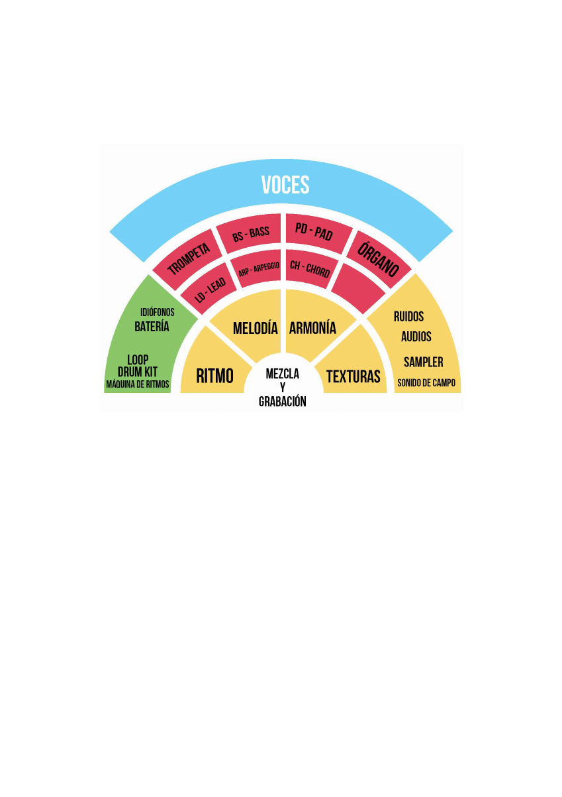
1.3 Organización y Ensamblaje
Con el paso del tiempo surgió la necesidad de empezar a organizarnos
por grupos que separen distintos instrumentos y elementos
musicales. La organización de los performers se efectúa a partir de las
siguientes agrupaciones:
Fig 1
Primera aproximación de ensamblaje grupal,
utilizando un modelo de orquestación tradicional
● Armonía: Entendemos por grupo de armonía a aquellas
personas que están ejecutando acordes y sus respectivas
progresiones. En una partitura tradicional se puede entender
como aquellas ‘notas simultáneas’ dispuestas de manera
vertical.
● Melodía: Entendemos por grupo de melodía a aquellas
personas que están ejecutando una sucesión de notas de
manera lineal, frases, o motivos musicales. En partitura
tradicional se puede leer de manera horizontal.
● Textura: Entendemos por grupo de texturas
4
a aquellas
personas que utilizan sonidos indefinidos, sin altura tonal
perceptible. En este grupo existe un trabajo más bien tímbrico
sobre el material sonoro. Se utilizan muestras de audio,
samplers, field-recording
5
, sintetizadores generadores de ruidos,
entre otros.
● Ritmo: Entendemos por grupo de ritmo a aquellas personas
que trabajan con percusiones, máquinas de ritmo, loops, batería
acústica/electrónica, idiófonos, samplers, entre otros.
● Voces: Entendemos por grupo de voces a aquellas personas que
trabajan con sus voces procesadas, técnicas de beatbox, gutural
y otras.
● Técnica: Entendemos grupo de técnica como aquellas personas
que operan la mesa de mezcla, realizan las grabaciones
multipista, y son encargados en trabajar la espacialidad
multicanal del ensamble. Este grupo no es menor, ni se
encuentra por fuera del ensamblaje, sino que entendemos a los
técnicos como performers también. La mezcla, el registro, y la
espacialidad va a determinar la estética y el entendimiento de
todo el ensamblaje.
4
Entendiendo textura no como en el sentido tradicional de la teoría musical
5
Entendemos “Field Recording” como la práctica de registrar audio fuera de un estudio de
grabación. Conversaciones espontáneas, sonidos de la naturaleza, sonidos de la ciudad o
cualquier otra cosa puede ser el foco de interés de la grabación.
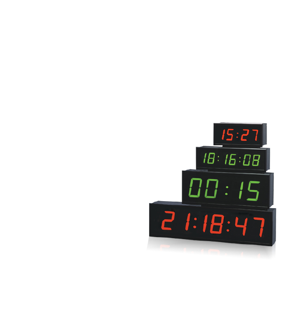
1.4 Sincronización
1.4.1 Cronómetro y percepción del tiempo
El ensamble cuenta con un cronómetro led de pared, que permite
marcar el inicio de cada sesión de improvisación y establecer
diferentes rutinas.
Fig 2
Cronómetros diseñados
para el Ensamble Electrónico Hybrido
El resultado de este experimento fue que, la percepción del tiempo
durante una improvisación no es para todos la misma. Mientras que
algunos deducen que habían pasado 5 minutos, en realidad habían
pasado 7 minutos o quizás 2.
Por ejemplo, dentro de una improvisación muchas veces estamos
embebidos en la eternidad de la abstracción y la imaginación que
proponen ciertos sonidos, además de pensarlos en combinación con
los otros existentes. La atenta y reducida escucha extiende la
percepción del tiempo haciéndonos pensar que lo que duró muy poco
tiempo, en realidad duró mucho y viceversa.
De esta manera, el cronómetro viene a compensar la percepción del
tiempo individual hacia una percepción colectiva, anclándola a un
tiempo que llamaremos “real”.
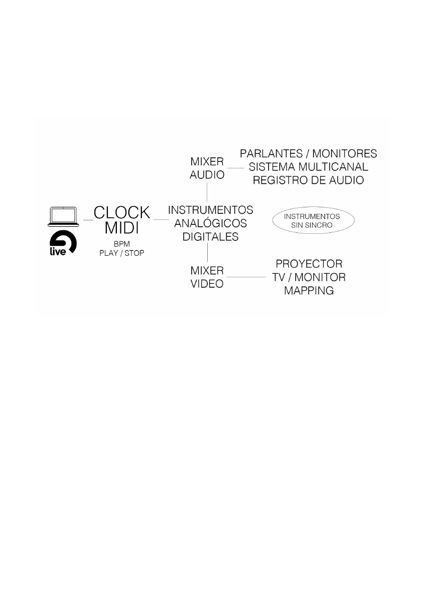
1.4.2 Sincronización analógico/digital vía MIDI
Creamos una sincronización grupal a través del protocolo MIDI, de
manera de tener todos los instrumentos conectados a un mismo
CLOCK, tanto para los sistemas analógicos como digitales, conectando
así también imagen y sonido.
Fig 3
Conexionado MIDI
Esto permitió, a través de una computadora servidor, enviar, recibir e
intercambiar información MIDI. Las modificaciones establecidas en el
servidor, afectarán a todos los instrumentos involucrados en la cadena.
Pudiendo aplicar variaciones de velocidad (BPM) para establecer
distintas dinámicas temporales, reajustes en la mezcla, ecualización,
compresión, y efectos.
1.5 Hacia un sistema de notación.
A partir de ir escuchando las grabaciones, surgió la necesidad y el
interés por reinterpretar algunos de los movimientos, piezas, obras,
tracks, que nos parecían interesantes retomar.
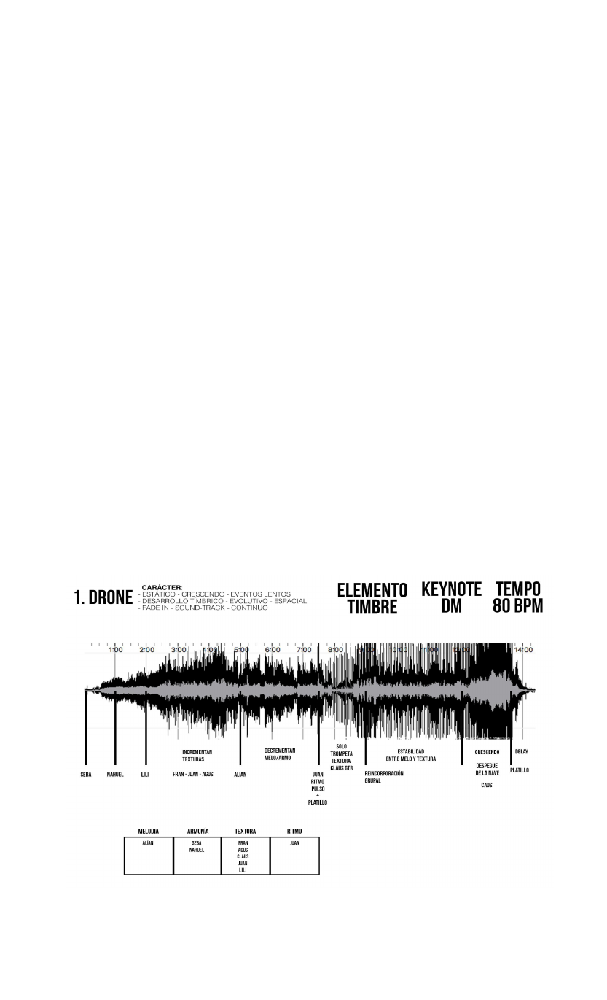
El problema era ¿de qué forma volver a interpretarlos?, ¿de qué
manera?, y ¿cómo hacerlo? Conociendo la complejidad de los
materiales tímbricos utilizados, y los recursos musicales (notas,
acordes) de aquella improvisación.
A partir de ahí, comenzamos a ensayar e intentar recuperar la esencia
de tres de esas improvisaciones, escuchándolas y ejecutándolas una y
otra vez de manera mimética.
En esta etapa, fue interesante el proceso de análisis perceptual.
Detectar e identificar aquellas estructuras, formas y detalles
fundamentales que dotaban de identidad a la pieza.
Para facilitar las cosas, construimos un primer boceto de notación. La
información era anotada en una hoja de papel A4, la cual contenía la
forma de onda (waveform) de todo la obra en sí (macroestructura) y
que cada uno de nosotros tenía una copia cerca de sus instrumentos.
Fig 4
Primer boceto de notación en papel
Esta notación contenía una regla de tiempo, que servía para ordenar
los eventos que eran señalados por medio de líneas, las cuales
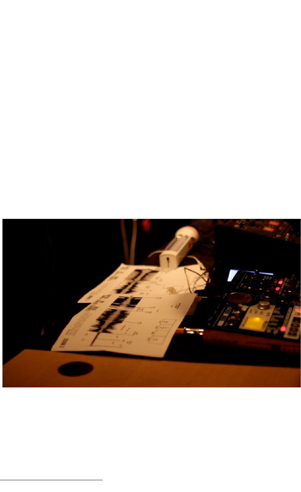
anunciaban las entradas y salidas de los ejecutantes, de manera
individual, y de manera grupal. Además, en esta hoja, encontramos la
información del tiempo de la obra anotado en BPM, el carácter de la
obra (descrito en palabras clave que permitían categorizar los
aspectos más generales de la obra), y la información de la frecuencia
fundamental al que nosotros llamamos como KeyNote
6
. Este último
detalle nos permitía establecer un canal de comunicación e
improvisación melódico y armónico.
Cabe destacar que esta re-interpretación de la obra, tiene un carácter
indeterminado, y que nunca es exactamente la misma pieza. Lo que
se intenta recuperar es la esencia y la identidad de la misma, para
poder recrear y acudir a la memoria colectiva.
Fig 5
Registro fotográfico de un concierto en vivo
utilizando la notación en papel
6
Interpretación Llamamos “KeyNote” al tono o frecuencia fundamental de una obra, tal cual
lo define Murray Schafer.
2. Objetivo
Mi objetivo en este trabajo es crear un entorno en el que se puedan
explotar las capacidades comunicativas sonoras y musicales durante
una improvisación, probadas en un nuevo contexto notacional y
explorar su potencial creativo y musical.
Explorar las estrategias de escucha y comunicación que surgen con
un sistema de notación colaborativo.
Apoyar la exploración de diferentes tipos de relaciones entre: los
artistas, intérpretes o ejecutantes, compositores, miembros de la
audiencia.
Diseñar un mecanismo mediante el cual la notación pueda responder
a la actividad sonora en curso y, al mismo tiempo, aportar nuevas
posibilidades de anticipación, coordinación, consenso constructivo y
colaboración.
Si la improvisación se puede considerar como "composición en
tiempo real", ¿por qué no integrar la notación?, ya que es el
mecanismo principal para representar y comunicar ideas musicales.
Objeto de estudio
El sistema de representación gráfica propuesto en este trabajo final de
grado, es un posible prototipo de sistema abierto, especial y específico
para el contexto del ensamble. Un prototipo de sistema que no aspira
ser cerrado, sino más bien un sistema flexible en constante
transformación y adaptación a las problemáticas del ensamble.
El objeto de estudio, son los pasos a seguir para crear un sistema de
notación y los procesos de iteración que existen en su desarrollo a
través de la experimentación, su documentación y una bitácora de
experimentos, improvisaciones y conciertos.
Propondré un modelo de análisis que permita extraer información
registrado en nuestras grabaciones experimentales para aumentar los
procesos perceptuales durante el proceso de improvisación, y a su vez
reflexionar sobre cómo esta escucha/observación del registro nos
permite llegar a un nuevo proceso de composición.
Para cumplir estos objetivos se utilizaron distintas herramientas
computacionales de análisis digital de audio. En principio para poder
notificar los distintos usos y recursos musicales utilizados (melodías,
armonías, ritmos) y al mismo tiempo, notificar sobre el aspecto
tímbrico del sonido, para poder describir, estructurar y segmentar la
materia sonora.
En función de esto, lo que necesitamos es un sistema de notación
cuyos rudimentos se puedan enseñar en minutos, de manera sencilla
e intuitiva. De modo que, luego de unas pocas instrucciones, el
performer pueda consultar el estado de la obra, antes y durante una
performance.
Me propongo desarrollar un sistema de notación que:
● permita comprender el suceso acontecido,
● contenga elementos icónicos precisos,
● contenga información escrita con formas tipográficas,
● pueda tener capacidad informativa suficiente y sobrada para
tener entidad propia, o que realice funciones de síntesis o
complemento de la información escrita,
● proporcione cierta sensación estética (no imprescindible).
3. Estado del Arte
En principio fue necesario investigar de qué modo comenzó a existir
un medio de representación gráfica del sonido, notación o partitura.
Luego, destacar antecedentes actuales sobre autores que hicieron
grandes cambios de paradigma y teorías sobre el tema en cuestión, y
bajo qué contextos surgieron.
Por último, como estos medios fueron siendo actualizados y mutando
de formas y soportes a partir de los distintos avances tecnológicos
hasta el día de hoy.
Todo esto teniendo en cuenta aspectos que releven importancia para
nuestro contexto de trabajo.
3.1 Los gráficos del pensamiento musical
El libro Sound Sculpture [1], es una colección de ensayos hechos por
artistas que brindan técnicas y aplicaciones sobre futuras direcciones
en lo que respecta a todo trabajo que involucre la materialidad sonora
desde el punto de vista de distintas disciplinas.
En su apartado The Graphics of Musical Thought, el artista R. Murray
Schafer
7
dice:
“Cuando escuchamos sonidos, se produce una escucha aural.
Cuando el sonido se acaba, desaparece, aquellos que los
hacen, quizás lo recuerden, lo recapturen o lo olviden”
Es por eso que las notaciones musicales existen de manera que los
pensamientos musicales no sean olvidados. Las partituras
7
R. Murray Schafer es un compositor, escritor, educador, pedagogo musical y ambientalista
canadiense, reconocido por su «Proyecto del Paisaje Musical del Mundo», preocupaciones por
la ecología acústica.
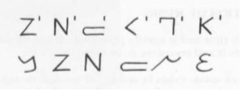
tradicionales describen las sensaciones auditivas mediante una
nomenclatura que se escribe en el espacio bidimensional.
Cabe destacar que no todas las culturas musicales han desarrollado
sistema de notación, de hecho, algunas no tienen ninguno, como por
ejemplo algunas tribus africanas de hoy día.
Un desarrollo que ha influido profundamente en la música occidental
en los últimos tiempos es la grabación. La grabación ha afectado tanto
a la estructura como a la notación de la música. En cierto modo, estas
técnicas permiten un registro más definido que las intenciones que
podría llegar a tener un compositor en una partitura escrita.
Todas las notaciones, destinadas a facilitar la reconstrucción de los
pensamientos musicales, tienden a dejar ciertas preguntas a la
discreción del intérprete.
Así, los compositores barrocos rara vez indicaron la dinámica de sus
piezas. En algunos casos, descuidaron incluso especificar la
instrumentación que tenían en mente. O así también, los antiguos
griegos no indicaban nada sobre los ritmos de la música o su flujo a
través del tiempo, excepto para identificarlo libremente con el
desplazamiento horizontal de las letras del alfabeto de izquierda a
derecha.
Fig 6
Partitura de la antigua Grecia
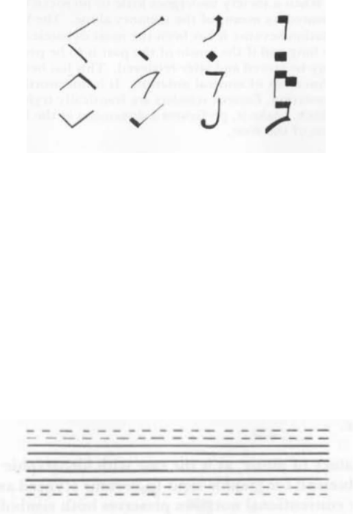
La era cristiana agregó la convención de identificar el tono con la
dimensión vertical. Para escribir las melodías del canto gregoriano, la
Iglesia tomó prestados los acentos diacríticos empleados en la retórica
y estos gradualmente se convirtieron en un sistema de neumas, o
signos que indicaban curvas melódicas distintivas.
Al principio indicaron simplemente un ascenso o una caída de la voz, y
como tal, se emplearon para refrescar la memoria de las melodías que
ya eran familiares. No llevaban valores rítmicos ni duracionales
particulares, estos fueron suministrados por las palabras cantadas.
Fig 7
Identificar el tono con la dimensión vertical
La introducción del pentagrama dio a estos signos posiciones fijas. Las
notas más agudas colocadas en las líneas y espacios superiores y las
notas más graves en las líneas y espacios inferiores. Se emplearon
varios números de líneas antes de que el de cinco líneas se convirtiera,
por razones puramente ópticas, en estándar.
Fig 8
Pentagrama de cinco líneas
para ubicar a los signos en posiciones fijas.
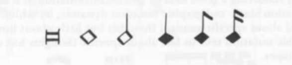
Los signos de las notas se desarrollaron más y se volvieron simbólicos
con respecto a sus duraciones. Esto se logró mediante la adición de
tallos y colas rellenando o vaciando el espacio de la cabeza de nota.
Fig 9
Duraciones
Los signos forman un código de ayudas mnemotécnicas. Deben
aprenderse de antemano, pero una vez que se han aprendido, son
capaces de proporcionar una gran cantidad de información precisa en
un espacio altamente compacto.
En el texto Schafer, concluye mencionando al “oscilógrafo” como una
de las máximas herramientas de representación gráfica de la época, y
va a decir que, debido a la imposibilidad de poder visualizar largas
duraciones de sonido a gran escala, sería imposible leer su resultado y
al mismo tiempo interpretarlo.
Hoy podríamos decir que ya no es así. Gracias a los avances de la
tecnología informática, hoy es posible contar con una herramienta
muy poderosa como el espectrograma digital de audio, el cual
produce un registro continuo del sonido a velocidad constante, al
alcance de cualquier computadora hogareña. Esta es la más exacta de
todas las notaciones gráficas, ya que la información sobre el tono, la
dinámica, la duración y el timbre, se pueden registrar con todo detalle,
a gran escala, durante largas duraciones.
3.2 ¿Por qué representar?
Pierre Couprie
8
en su texto “Methods and tools for transcribing
electroacoustic music” [2] y “Graphical representation: an analytical
and publication tool for electroacoustic music” [3]
reflexiona sobre la necesidad de representar y transcribir piezas
electro-acústicas.
“La representación y sus cualidades didácticas y funcionales
representan innegables ventajas en la transmisión del análisis.”
Las cualidades didácticas de tal representación son obvias: escuchar
repetidamente mientras se siguen los gráficos permite identificar los
sonidos, las estructuras, e incluso algunas de sus cualidades más
difíciles (que a menudo escapan del neófito).
Ya sea el analista, el musicólogo, el oyente experimentado o el neófito,
cada uno utiliza la representación para guiar su escucha.
La escucha se organiza de acuerdo con la representación: cada
escucha permite profundizar en el material y en las estructuras de la
obra.
8
El músico y compositor Pierre Couprie, es un investigador apasionado por el desarrollo
multimedia e informático aplicado a la música. Hoy en día es un gran referente internacional
en lo que respecta a trabajos de investigación que involucren sistemas notacionales
modernos.
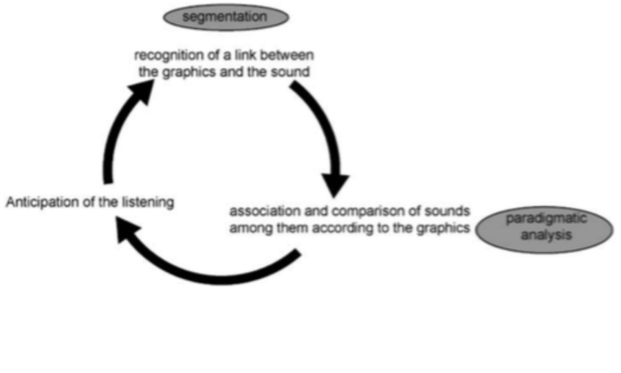
Es posible detallar las diferentes fases del proceso de audición:
Fig 10
Proceso iterativo de escucha
utilizando representaciones gráficas.
1. Una apreciación de los vínculos entre gráficos y sonido
(segmentación),
2. La asociación y comparación de los sonidos mismos en relación
con los gráficos (análisis paradigmático)
3. Un anticipo de la escucha.
La creación de lo visual (es decir, la representación gráfica del sonido)
y su proceso iterativo de escucha y observación, provoca
inevitablemente un enriquecimiento de la escucha, y del
reconocimiento sobre el material sonoro.
Además, otro aspecto positivo de la representación gráfica es que
puede ser muy útil como herramienta pedagógica en áreas de
educación relativas a lo musical y lo sonoro.

¿Por qué transcribir?
La falta de soporte visual es un obstáculo para el desarrollo del análisis
de música electroacústica/electrónica/experimental. La
etnomusicóloga Simha Arom señala que el estudio de la música oral
tradicional requiere que uno “tenga una imagen global del
documento de sonido frente a nosotros en todo momento”. La
proximidad entre el enfoque analítico utilizado en la etnomusicología
y el utilizado en las obras electrónicas ha permitido el desarrollo de la
transcripción de la misma manera que la utilizada en la
lingüística estructural.
La transcripción de una obra de Live Electronics sigue parcialmente
los pasos desarrollados para el estudio estructural de los lenguajes.
Parcialmente, porque algunos pasos, como el cambio, o el concepto
de clase de equivalencia, rara vez son aplicables de manera
sistemática. La segmentación del flujo musical sigue siendo uno de los
pasos más problemáticos en el análisis de este tipo de obras. Así
presentada, la transcripción sigue siendo una herramienta
principalmente descriptiva.
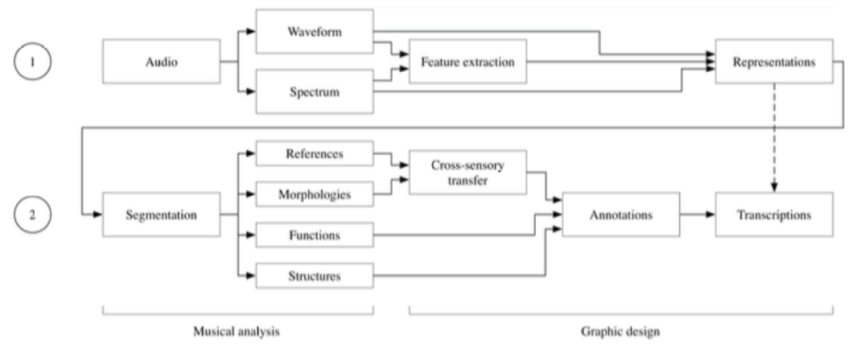
Aplicamos el modelo de transcripción propuesto por Pierre Couprie:
Fig 11
Modelo de transcripción
Pierre Couprie
1. Identificar el origen del sonido (análisis causal)
2. Segmentar el “flujo” musical en morfologías basadas en un análisis de
parámetros acústicos de los sonidos (análisis morfológico).
3. Identificar las funciones musicales del discurso musical (análisis
funcional)
4. Identificar elementos de estructuras temporales largas (macro
estructura), hasta las microestructuras finamente divididas (análisis
formal).
El siguiente paso es convertir estos elementos analíticos en
anotaciones que se ensamblarán para crear la transcripción. Luego, las
transcripciones y representaciones se pueden combinar para formar
representaciones analíticas o compuestas.
3.3 La necesidad de un vocabulario sonoro
Debido a las dificultades relacionadas con la complejidad de las
estructuras espectro-morfológicas y espacio-morfológicas que dan
resultado del uso del espectrograma como herramienta de análisis,
surge una nueva necesidad lingüística para poner en palabras sobre
aquello que vemos en los gráficos.
Pierre Schaeffer en su “Tratado de los objetos musicales” [4] hace un
extenso trabajo describiendo la morfología y la topología del objeto
sonoro, categorizándolo y descomponiéndolo en símbolos y signos. Su
trabajo es muy significativo en la historia del análisis sonoro, pero no
se adecua perfectamente a la problemática de esta investigación, ya
que los advenimientos de la tecnología han superado ampliamente
los conceptos teóricos, y aquí se hace énfasis directamente en el
aspecto físico de la representación gráfica por medio de
espectrogramas y no precisamente en el proceso de simbolización.
Es por esto que la investigación de Denis Smalley
9
,
Spectromorphology: explaining sound-shape [5], resulta muy útil para
este trabajo a la hora de interpretar y describir las características más
complejas de los sonidos. Smalley complementa y actualiza el
paradigma de Schaeffer (quizás por ser una investigación muchísimo
más moderna) sin dejarlo de lado, y se adecua perfectamente a
nuestro contexto debido que se dedica pura y exclusivamente al
análisis espectro-morfológico.
Utilizaremos gran parte de su trabajo, para consultar y poder utilizar
sus definiciones en función de establecer un “vocabulario sonoro” para
enriquecer los debates y discusiones sobre la producción de material
9
Denis Smalley es un compositor de música electro acústica y acusmática que brindó
grandes aportes al estudio de la espectromorfología.
sonoro dentro del Ensamble, de manera de poder tener más
herramientas lingüísticas, pudiendo ser más específico y concreto a la
hora de hablar sobre un sonido.
Fig 12
Terminos acuñados por David Smalley para
Espectromorfología
3.4 Notaciones Prescriptivas y Descriptivas
Existen dos tipos de notación: notación simbólica estática y notación
gráfica dinámica. La notación simbólica nos dice mucho sobre
pensamientos musicales específicos, pero poco sobre cómo estos
pensamientos están unidos entre sí. Mientras que la notación gráfica
nos dice menos sobre pensamientos específicos, pero más sobre sus
relaciones generales y formales.
La representación gráfica por medio de espectrograma, es
"descriptiva" en lugar de "prescriptiva"; es decir, describe cómo suena
realmente una performance; no prescribe cómo se debe hacer que
una performance suene.
Es por eso que si bien a lo largo de esta investigación, estos dos modos
de sistemas conviven entre sí y se retroalimentan (en función de
cumplir los objetivos antes mencionados) haremos énfasis sobre los
procesos descriptivos para trabajar con los análisis que hemos
realizado sobre las experiencias y experimentos realizados en el
laboratorio, y dejaremos las cualidades prescriptivas para los ejercicios
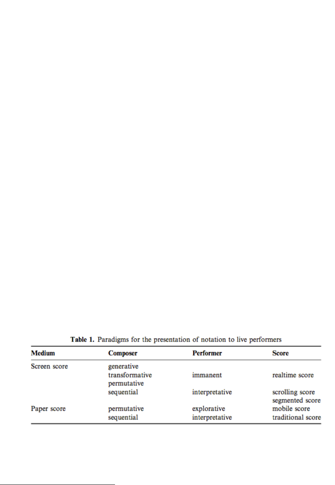
y consignas preestablecidas que realizamos durante los ensayos del
Ensamble.
3.5 Movilidad y Notación en Pantalla
Lindsay Vickery
10
es una notable investigadora que ha trabajado en
diversas investigaciones que exploran los advenimientos de nuevos
sistemas de notación en pantalla (screen score).
En su texto “The Evolution of Notational Innovations from the Mobile
Score to the Screen Score” [6], dice:
“Todas las innovaciones o renovaciones de las partituras
modernas han sido el producto de desarrollos en tecnología. La
capacidad de los procesos gráficos, cada vez más rápida, liviana,
accesible, juega un papel muy importante para explorar todas
sus posibilidades. El desarrollo de software capaz de generar
partituras robustas en tiempo real y su manipulación emerge
recién en el 2007.”
Hay cuatro consideraciones principales que gobiernan la relación
entre las nuevas notaciones en pantalla y las notaciones tradicionales:
!
FIG 13
Paradigmas de la presentación
de notación para live performers
10
Lindsay Vickery es compositora y performer que brindó grandes aportes en los campos de la
música electrónica, improvisación, ensamblajes, y notación en pantalla.
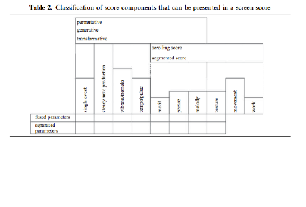
"
1. Medium:
Disposición estática o dinámica de materiales.
2. Compositor:
El material musical puede ser configurado para ser leído:
- Secuencialmente
- Permutada
- Transformada
- Generada en tiempo real
3. Performer:
La relación entre el intérprete y la partitura se puede caracterizar
como:
- Interpretativa: partituras tradicionales.
- Explorativa: móvil / de desplazamiento.
- Inmanente: que ocurre en el momento.
- Interactivo: cuando las acciones de los performers influyen en
la partitura.
4. Partitura:
La lectura de una notación musical tradicional implica la
abstracción de estar leyendo un “desplazamiento” continuo de
música en el tiempo y dividirlo en secciones que se puedan
organizar en páginas sucesivas.
Fig 14
Clasificación de los componentes de notación
que se pueden presentar en una puntuación de pantalla
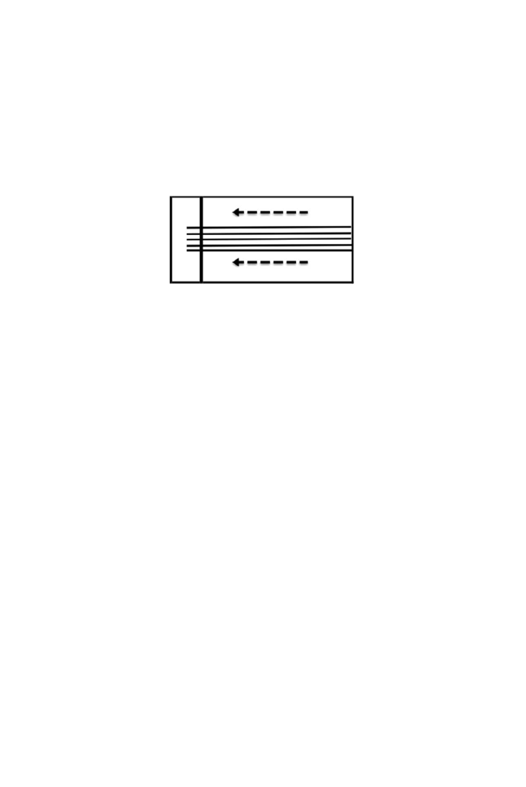
3.5.1 Modelos de Screen-Score (Notación en pantalla)
Vickery categoriza las notaciones en pantalla a partir de 3 tipos.
3.5.1.1 Scrolling Score
La partitura por desplazamiento, se mueve de izquierda a derecha,
La duraciones de un evento musical son proporcionales a la duración
espacial de las representaciones gráficas.
Fig 15
Scrolling Score
En la notación tradicional, las duraciones de las notas son
principalmente determinadas por su forma. Para ahorrar espacio, las
partituras tradicionales no siempre incluyen eventos musicales en la
página: las notas más largas tienden a ocupar menos espacio en
comparación con las notas cortas, y el espaciado puede depender de
la duración de los eventos.
Por esta razón, el modelo scrolling score, se adapta mejor a la notación
gráfica proporcional.
FIXED PLAYHEAD:
Son imágenes fijas, y está segmentado por páginas, dónde siempre
comienzan desde el lado derecho de una pantalla. Lo que permite
tener más información para anticipar un evento sonoro, pero pierde la
idea de “continuidad” (en esto se asemeja a las partituras
tradicionales).
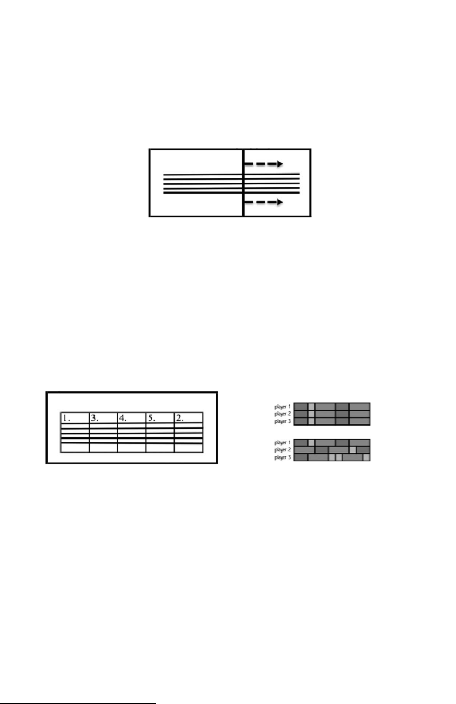
SWIPING PLAYHEAD:
Limita la cantidad de información que se puede ver en una pantalla,
pero mantiene la idea de continuidad. Pudiendo observar los tres
estadios de un evento, pasado (recuerdo o memoria del último
evento), presente (tiempo real) y futuro (anticipación).
Fig 16
Desplazamiento
3.5.1.2 Permutación
Se construye a partir de bloques/celdas y su sincronización
performática. Pueden cambiar su tamaño, dividido por celdas y que
pueden ser permutadas.
Fig 17
Permutativas
3.5.1.3 Transformativa
Actúa sobre un notación original cuyas alteraciones son ocurridas a
través del tiempo. En este sentido, esta relacionada al concepto
musical de desarrollo
11
, mientras que la permutación está relacionada
con la concatenación o bloques de formas. Es expandida a través de la
transformación digital en las que las alteraciones no necesitan estar
11
En música, desarrollo musical es un proceso por el cual una idea musical se comunica en el
curso de una composición. Se refiere a la transformación y actualización del material inicial y a
menudo se contrasta con la variación musical, que es un medio ligeramente diferente para el
mismo fin.
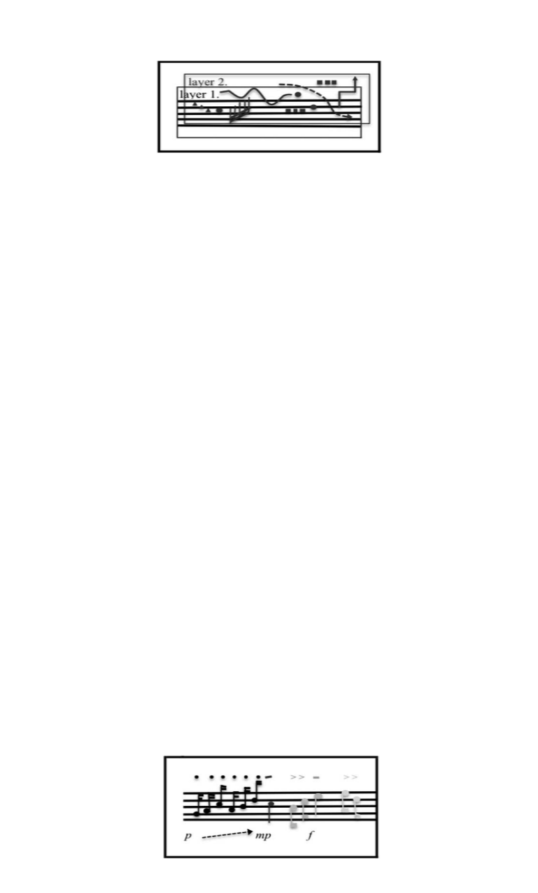
predeterminadas: puede que estas actúen únicamente sobre el
material en cada performance.
Fig 18
Transformativa
Pueden ser aplicadas gráficamente a partituras digitales, alterando la
forma en que se realizará.
Es el descendiente de “Refrain” de Karlheinz Stockhausen, un trabajo
donde la partitura de papel esta superpuesta por una tira de plástico
transparente móvil (capas), que modifica lo que sea que esté debajo
del material. Es un enfoque estructural al que se refiere como “forma
variable”.
Esta configuración permite independencia temporal para establecer
parámetros como textura, nota, dinámica y articulaciones.
La notación nos muestra un continuum de transformaciones desde
silencio hasta libre improvisación a ser seguidas por cada performer.
3.5.1.4 Generativa
Se usan algoritmos o procesos interactivos generativos que pueden
usarse para construir componentes de una partitura digital en tiempo
real.
Fig 19
Generativa
4. Materiales y Métodos
4.1 Materiales
Los materiales que nos sirvieron para toda esta investigación, han sido
todas las grabaciones de audio realizadas entre 2016 y 2019. Las
grabaciones pertenecen tanto a los encuentros y ensayos como a las
presentaciones en vivo. En principio, el material era capturado en un
canal estéreo, es decir, todos los performers eran grabados en un solo
canal estéreo. Con el paso del tiempo, fuimos expandiendo nuestra
técnica con nuevos equipos. De esta manera, optamos por
grabaciones del tipo multicanal dónde cada uno se encuentra
separado por canal, y/o agrupados como mencionamos
anteriormente. Esto devino en varias ventajas: la posibilidad de
espacializar los sonidos en un recinto, la posibilidad de escuchar y
analizar cada uno de los sonidos por separado del resto, y por último,
realizar nuevas mezclas que permitan un mejor ensamblaje sonoro.
4.2 Herramientas de análisis
Aquí, hemos hecho distintos tipos de análisis (morfológicos,
estructurales, funcionales, y tecnológicos) a partir de herramientas de
software por computadora.
Fusión de herramientas de análisis
El ensamble electrónico híbrido utiliza la fusión de varias herramientas
computacionales que permiten el análisis espectral y frecuencial de
los sonidos, de manera de poder obtener la mayor cantidad de
información en términos musicales y tímbricos. Con esta cantidad de
información obtenida, los comportamientos y las estructuras se hacen
más visibles. Características como el ritmo, escalas melódicas
utilizadas, recurso armónico, y la utilización de texturas se hace
evidente, así como también sus características espectromorfológicas.
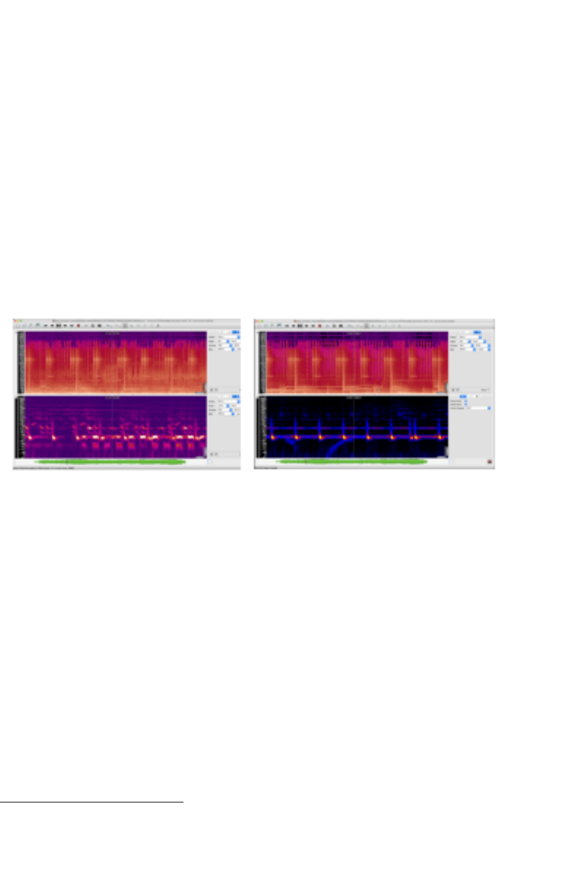
4.2.1 SONIC VISUALISER
12
Este programa permite visualizar, analizar, y hacer anotaciones sobre
la forma de onda. Permite imprimir formas de onda, espectrogramas,
modificar parámetros de su visualización, y superponer anotaciones
para una misma regla de tiempo. Es utilizado para investigaciones en
el campo de la música y la ciencia (acústica, ingeniería en sonido).
Este software nos permitió crear dos paneles de espectrogramas: uno
completo (0hz a 22khz) y otro sobre el rango melódico (0hz a 1,3khz),
Fig 20 Fig 21
0hz a 22khz 0hz a 1,3khz
El espectrograma completo permite, por un lado, tener una idea
macro de lo que sucede en el espectro, dónde se evidencian muchos
de los usos que permiten la modificación de los parámetros de los
sintetizadores. Por otro lado, hacer zoom en el rango melódico para
poder extraer minuciosamente información melódica y rítmica (Fig.
21).
12
Es un software de código libre, distribuido por “GNU General Public License” y desarrollado
por el “Centre for Digital Music” de Queen Mary, University of London.
Chris Cannam, Christian Landone, and Mark Sandler, Sonic Visualiser: An Open Source
Application for Viewing, Analysing, and Annotating Music Audio Files.
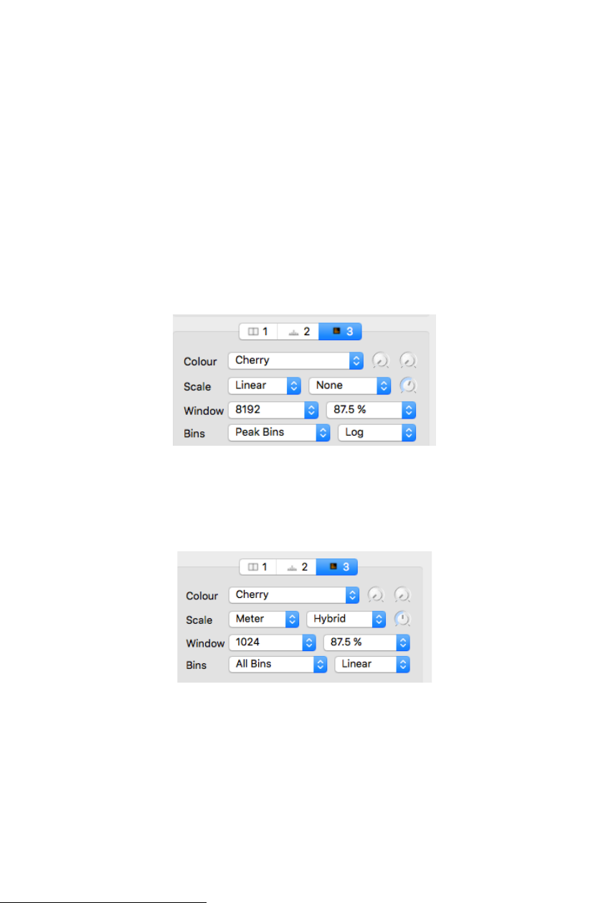
Se selecciona una paleta de colores y se ajustan los parámetros de
Threshold (umbral) y rotación de color de manera de poder visualizar
cómodamente y hacer más evidentes los cambios en el espectro.
Se establecen los valores de tamaño de ventana y overlap para el
análisis de espectral de Fourier
13
que va a determinar la resolución y la
calidad del espectrograma. Se eligen los valores zoom vertical
(frecuencia) y zoom horizontal (tiempo) de ventana para poder
adecuar el tiempo y la velocidad del desplazamiento.
Fig 22
Configuración de Espectrograma general
Fig 23
Configuración de Espectrograma Melódico
13
En matemáticas, el análisis armónico o análisis de Fourier estudia la representación de
funciones o señales como superposición de ondas "básicas" o armónicos.
Investiga y generaliza las nociones de series de Fourier y transformadas de Fourier. A lo largo
de los siglos XIX y XX se ha convertido en una materia enorme con aplicaciones en campos
diversos como el procesamiento de señales, la espectroscopia, la mecánica cuántica o la
neurociencia.
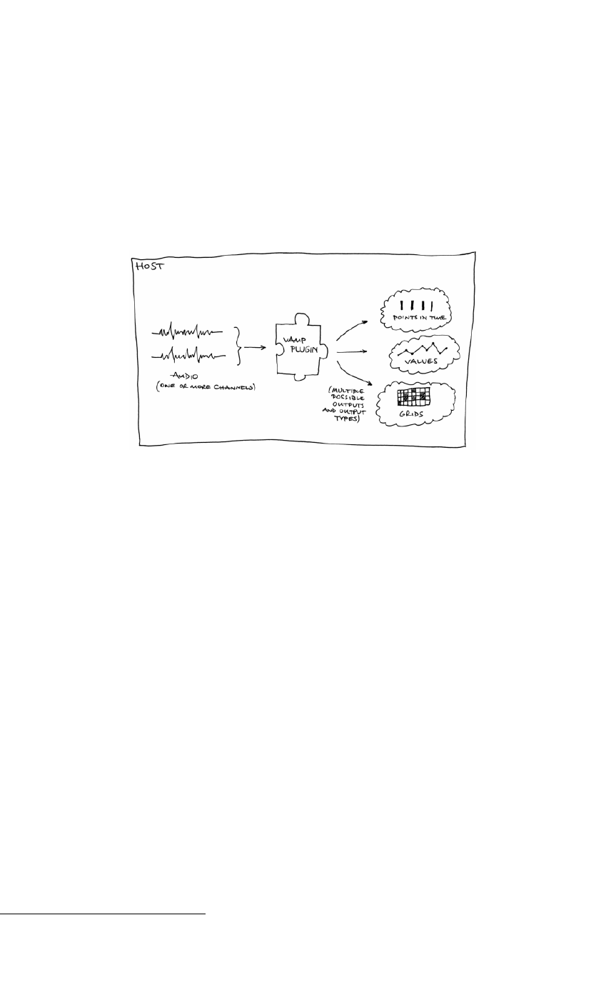
Luego de la calibración del espectrograma, aplicamos una serie de
complementos (plugins) llamados Vamps
14
.
4.2.2 VAMP PLUGINS
Son una serie de plugins, que permiten extraer información
descriptiva de una señal de audio, y exportarla en archivos de imagen
vectorizados o en archivos de texto encolumnados.
FIG 24
VAMP entrada y salidas
Fueron elegidos algunos de ellos que resultaron importantes para
extraer información musical:
Tonalidad
Utilizamos Key Detector
15
para estimar la tonalidad del audio y sus
cambios a través del tiempo.
Melodía
Utilizamos Melody Extraction
16
y Note Onset Detector
14
para la
transcripción de la melodía polifónica. Los segmentos sin melodía se
indican con valores de cero o negativos.
14
Es un plugin de código libre, distribuido por “GNU General Public License” y desarrollado por
el “Centre for Digital Music” de Queen Mary, University of London.
15
Desarrollado por Centre of Digital Music (C4DM), Queen Mary, University of London,
Inglaterra.
16
Desarrollado por Music Technology Group, Universitat Pompeu Fabra, Barcelona, España.
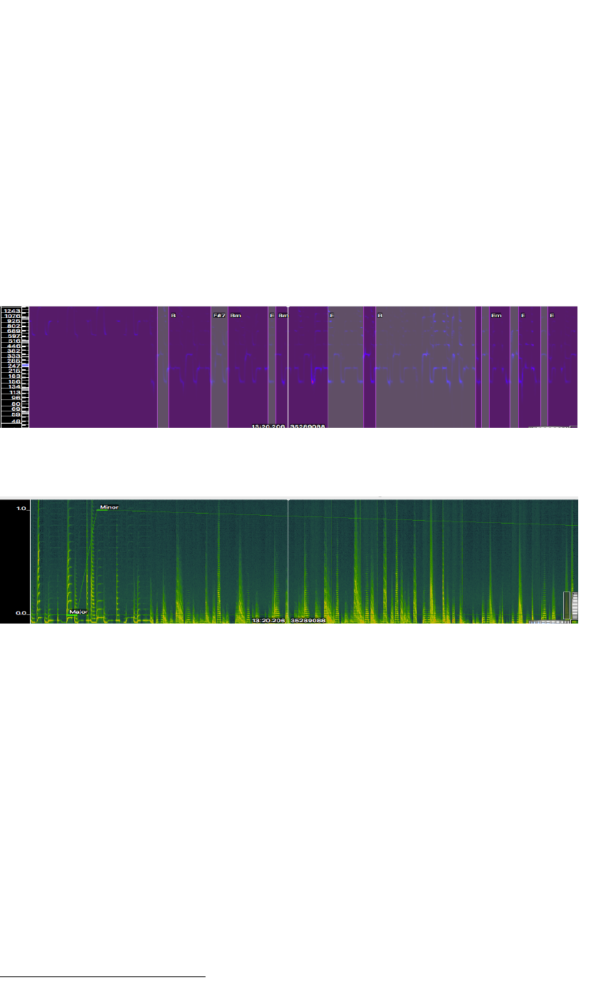
Armonía:
Utilizamos Chordino
17
para estimar los cambios armónicos expresados
en acordes.
Temporalidad:
En principio utilizamos la regla de tiempo nativa del Sonic Visualiser, y
luego adicionamos el plugin Bar and Beat Tracker
14
para estimar el
tempo musical y además, rastrea dónde comienzan y terminan los
compases y los beats.
FIG 25
Extracción de segmentos armónicos
FIG 26
Cambios en escalas.
En esta imagen figura 25 se pueden ver los cambios en armonía
segmentados de forma vertical, con distinto color para cada acorde.
También en la figura 26 se pueden ver a través de líneas conectadas
los cambios de escala. Los rectángulos blancos pertenecen a la
información MIDI generada a través de la detección notas.
17
Desarrollado por Matthias Mauch, estudiante del centro C4DM.
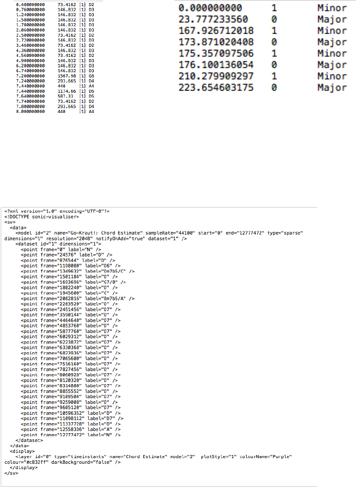
Estos mismos análisis gráficos también pueden exportar la
información mediante líneas de texto encolumnado.
Fig 27
Notas obtenidas
1er columna: Tiempo
2da columna: Frecuencia
3era columna: Nota
Fig 28
Aquí el programa imprime:
1er columna: Tiempo
3er columna: Escala Mayor o Menor
Fig 29
Aquí el programa imprime los acordes estimados.
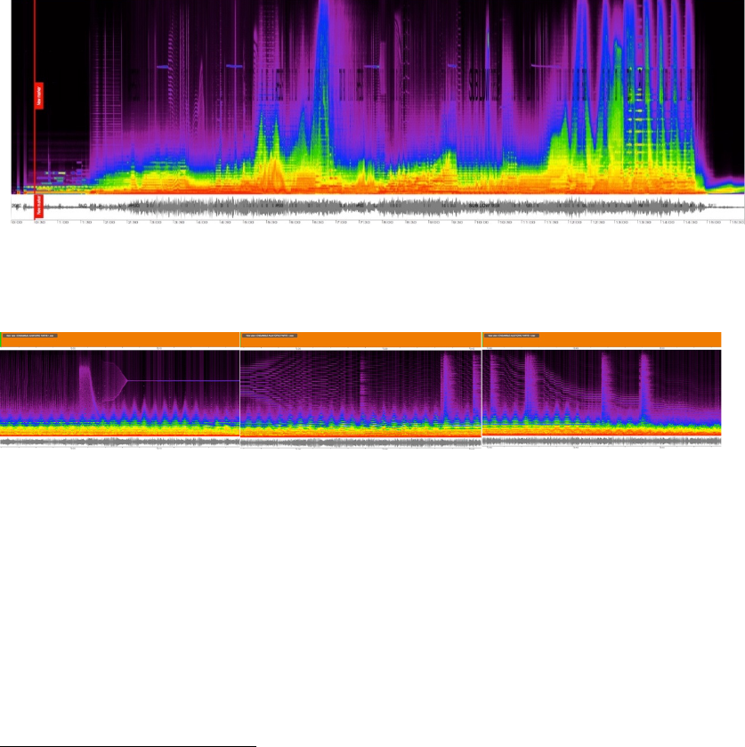
4.2.3 EANALYSIS
El programa EANALYSIS
18
se utilizó para estimular el diseño y el
estudio morfológico y tipológico de los objetos sonoros. Esta
aplicación nos ofrece acceder rápidamente a la librería de elementos
morfológicos diseñados por Pierre Schaeffer en “tratado de los objetos
sonoros”, y también crear capas para poder dibujar sobre los gráficos.
Pudiendo así indexar múltiples formatos de información prediseñados
y/o diseñados por uno mismo.
Fig 30
Ejemplo de macro estructura
Fig 31
Ejemplo de micro estructura
18
EAnalysis forma parte del proyecto de investigación titulado ‘New multimedia tools for
electroacoustic music analysis’ en el Centro de Investigación MTI de la Universidad de
Montfort (Leicester, Reino Unido). El proyecto inicial (2010-2013) fue financiado por el Arts and
Humanities Research Council (AHRC).
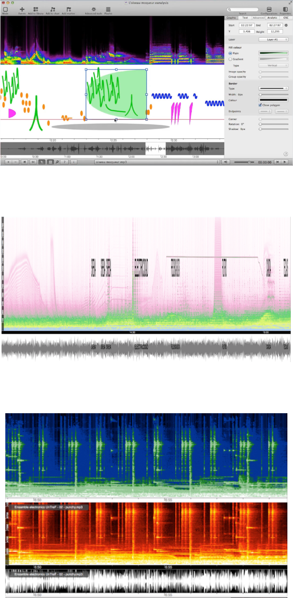
Fig 32
Ejemplo de dibujo sobre espectrograma
Fig 33
Indexar texto como eventos en
Tiempo real
Fig 34
Multi capa: Forma de onda y Espectrograma
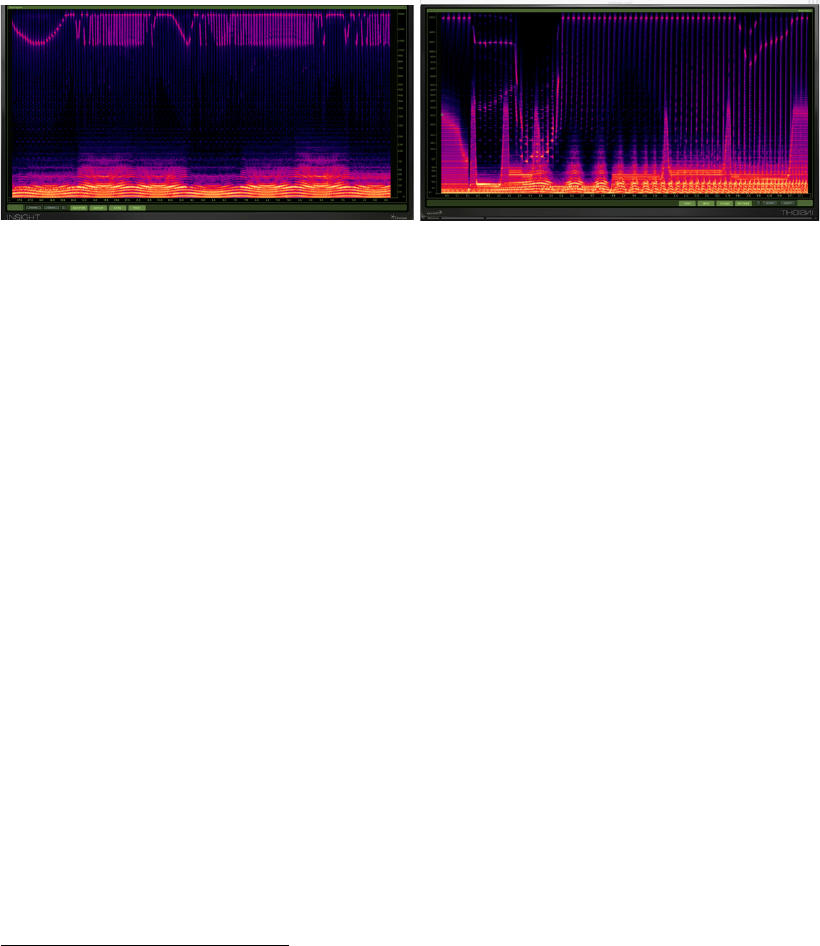
4.2.4 IZOTOPE Insight
El programa IZOTOPE Insight
19
, fue utilizado para generar el
espectrograma en tiempo real. Durante los ensayos, es visualizado a través
de una TV LED o proyectado en una de las paredes del laboratorio. En un
principio sólo obteníamos la visualización del canal en estéreo.
Fig 35
Imagen estéreo grupal:
Dúo Tomas Lilli & Juan Perpiñá
A partir de la versión 2, y a partir de la implementación de Relays
20
,
podemos crear distintos espectrogramas para cada uno de los performers
de manera separada. Esto permitió la discriminación de cada performer
dentro de un mismo gráfico a través de distintos colores, con la posibilidad
de ver a todos juntos al mismo tiempo, y de poder seleccionar sólo uno o
algunos de ellos.
19
IZOTOPE INSIGHT 2 es un complemento integral de medición y análisis de audio para estudios de
postproducción y música.
20
Relay es una herramienta que comunica los complementos de iZotope, enviando y recibiendo la
información en decibeles de cada canal.
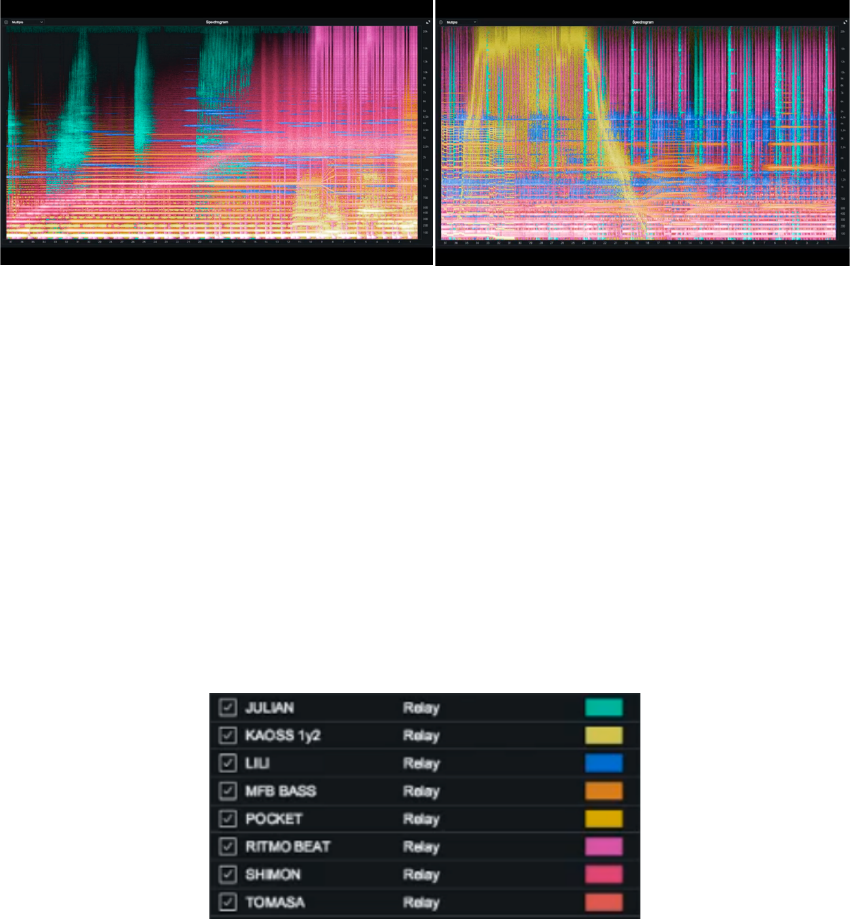
Fig 36
Espectrograma multicanal multicolor
En la mayoría de los casos, el color es asignado para cada fuente sonora,
aunque en algunos casos el color se asocia a un grupo determinado de
elementos sonoros (es decir varias fuentes sonoras agrupadas en un
elemento) que comparten características y funciones similares. Este caso
sucede cuando existen más de 8 fuentes sonoras. A partir de más de 8
fuentes sonoras, el espectrograma se vuelve ilegible y sobrecargado de
información, lo cual entorpece la lectura y la visibilidad de las fuentes.
Fig 37
Cada performer tiene asignado un color.
Cuando exceden las 8 fuentes sonoras se agrupa.
La saturación del color se asocia con la intensidad en decibeles del sonido.
Los colores que se encuentran saturados o en blanco, son sonidos cuya
intensidad en decibeles supera el umbral de +0 dB, es decir sonidos
distorsionados. Mientras que los colores más bien obscuros, tienden a
menos infinito dB es decir hasta llegar al silencio total, y/o color negro.
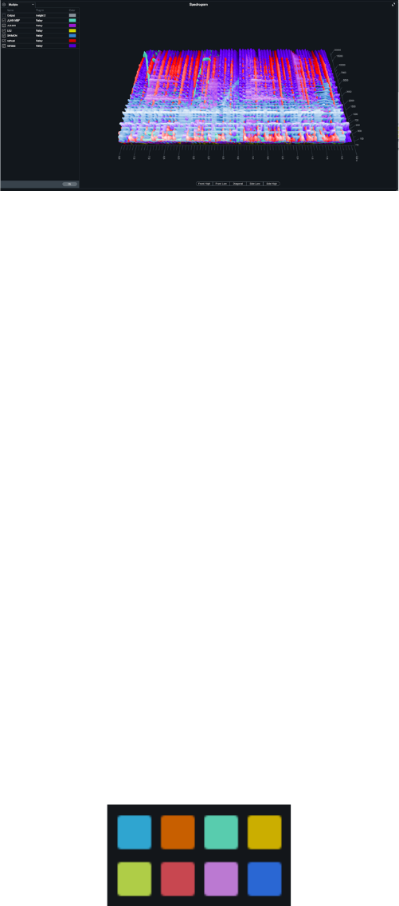
Fig 38
Espectrograma 3D multicanal
En la figura X se puede ver como el performer que tiene asignado el color
azul está saturando y distorsionando la señal. En este modo de tres
dimensiones el eje Z (que corresponden a los valores en decibeles)
evidencia aún más la intensidad en volumen.
PALETA DE COLORES
La elección de la paleta colores que existe, está determinada en función del
timbre que produce cada performer. Dejando así los colores más obscuros
para aquellos instrumentos que utilizan la mayor amplitud dentro del
espectro de frecuencias, y los colores más claros para aquellos performers
que están dentro de un ancho del espectro de frecuencias más bien
estrechas y definidas. De esta forma se puede observar la profundidad del
color y de sonido al mismo tiempo. Aún nos encontramos en etapa de
experimentar con distintas paletas buscando la que mejor se contraste
entre las capas.
Fig 39
Selección de colores para paleta
CONCEPTO DE FEEDBACK VISUAL
El feedback visual, que nosotros llamamos, podría ser una analogía al
concepto de “monitoreo” de los conciertos en vivo. Durante un concierto,
los parlantes llamados “monitores” permiten que el performer tenga una
escucha directa y cercana de lo que está haciendo, mientras al mismo
tiempo, el sonido es enviado a un sistema de PA
21
para el público. Esto
permite que el performer tenga más control de lo que está enviando hacia
el PA.
Para ejemplificar, cuando en un concierto en vivo el músico reclama al
técnico de sonido por más volumen dentro de su monitor, lo que está
diciendo es que no se escucha propiamente. Esto no le permite al músico
poder afinar y poder ser consciente plenamente de lo que está
produciendo, debido a que la distancia que tiene hasta el parlante, sumado
a la insuficiencia del volumen, pueden confundir al performer,
desorientándolo.
El feedback visual, vendría a funcionar conceptualmente de la misma
manera, pero en clave visual. De esta manera, el performer tiene doble
control sobre el material sonoro que produce. Dos dimensiones para
controlar una misma cosa. Lo que escucha, y lo que ve (de lo que produce
sonoramente).
21
PA (de las siglas del inglés Public address system), es un sistema de refuerzo de
sonido o megafonía empleado para dirigir el sonido principal de una actuación o concierto al
público asistente en la sala.
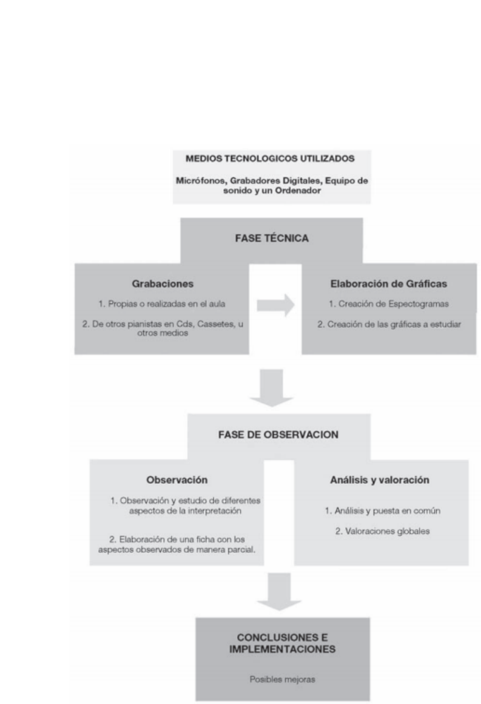
4.3 Método de prueba
Durante la puesta a prueba del sistema, existe una iteración circular entre
los procesos de composición, improvisación, performance e interpretación,
a partir de incluir los resultados obtenidos en los análisis de la etapa
anterior.
Fig 40
Método de prueba, Lorenzo Gracia (2010)
Hemos tomado como modelo a seguir, un método utilizado por Lorenzo
Gracia de su trabajo “Representaciones gráficas del sonido: una
herramienta para el análisis de la interpretación pianística” [7] para poner a
prueba sus representaciones gráficas.
Todo esto invita a pensar en que ya no existen barreras entre estas
disciplinas tan rígidamente establecidas por la música tradicional. Hoy en
día las tecnologías de la computación y los sintetizadores nos permiten
cruzar estas barreras muy fácilmente. Tampoco existe la idea de un
director, conductor, ni un único autor de la obra.
Utilizando el modelo de prueba dividimos nuestra tarea en cuatro etapas:
1) Improvisación: Nuestra primera etapa de producción pertenece a una
fase de experimentación donde a partir de una serie de ejercicios lúdicos o
consignas, se improvisa libremente respetando cada rol asignado
previamente. La experiencia se graba en multipista.
2) Composición: A partir de una escucha reducida
22
de las grabaciones,
generamos distintos tipos de análisis (materiales, formales,
estructurales) que nos permiten descomponer la obra en distintos
segmentos.
3) Performance: A la hora de llevar a cabo la performance, se coloca
una pantalla donde se visualizan los análisis en tiempo real y no-real,
permitiendo establecer una guía que contemple, tiempo, acordes,
melodías, notas, eventos sonoros, y acciones.
4) Interpretación: Por último, se evalúa a partir de una contrastación
entre las grabaciones de la improvisación y su posterior re-
interpretación.
22
Término acuñado por Pierre Schaeffer y Michel Chion. Se entiende por reducida a cuando la
atención se centra en las propiedades del sonido de manera abstracta.
5. Resultados
A partir de toda esta investigación, con el uso de las herramientas ya
mencionadas, y aplicando nuestra metodología obtuvimos los siguientes
resultados a partir de experiencias dentro de diferentes contextos.
Por un lado, las experiencias que obtuvimos dentro del laboratorio (a
puertas cerradas) a través de ensayos, y por otro, las que tuvimos durante
tres eventos abiertos al público poniendo el sistema a prueba.
Es importante hacer esta diferencia entre los contextos, debido a que
dentro del laboratorio existe la posibilidad, la apertura y la flexibilidad de
modificar constantemente los parámetros del sistema, adecuándolos a
nuestras necesidades. Pudiendo así experimentar a través de pruebas de
ensayo y error.
En cambio, durante los eventos, el sistema está cerrado, y esto nos permite
ponerlo a prueba fuera de nuestro hábitat de trabajo. Además, la presencia
del espectador aporta una nueva perspectiva, ya que participa, interactúa,
e interpreta. Esto es muy enriquecedor para el experimento en sí. Poder
tener la opinión, la mirada y la reacción de un otro que es ajeno a la
investigación y que posiblemente algunos de ellos no sean músicos, ni
performers, ni provengan del campo de las Artes Electrónicas en sí.
5.1 Experiencias dentro del laboratorio
[JULIO 2018 - JULIO 2019]
Dentro del laboratorio, los resultados de las representaciones obtenidas a
través de Sonic Visualizer, nos permitieron alcanzar una escucha atenta y
reducida de las grabaciones de audio que hacíamos. Lo más importante
fue entender y comprender qué hacía cada uno en términos musicales y al
mismo tiempo obtener información precisa en una representación gráfica.
Es decir, que esta herramienta se transformó en un recurso de consulta
constante a la hora de establecer ciertos lineamientos melódicos,
armónicos y rítmicos de una pieza; ósea: componer pura y exclusivamente
desde la teoría musical. Esto permitió a aquellos participantes que no
tienen conocimientos de teoría musical o que no provienen de una escuela
tradicional musical, sino más bien de una escuela electrónica y
experimental, poder tener acceso a este tipo de información e integrarla a
su modo de producción sonora como una herramienta más.
Este tipo de representación gráfica no resultó cómodo a la hora de leer, ni
interpretar, ni ejecutar la pieza en sí, ya que la cantidad de información
visual resulta excesiva y engorrosa para la lectura en tiempo real. Además,
determina demasiado la pieza y no permite abrir juego a la libre
interpretación e improvisación. Cabe destacar, que la plantilla de análisis
diseñada en esta investigación puede ser muy útil para otros proyectos de
Live Performance ajenos al Ensamble Electrónico Hybrido. La plantilla está
diseñada de modo tal que, con el sólo hecho de volcar un audio en el
programa, se generan imágenes, videos y archivos de texto con acceso a
toda la información musical que fuimos destacando a lo largo de la
investigación que resultan pertinentes para cualquier Live Performance.
Las representaciones gráficas generadas con EAnalysis son muy efectivas
para establecer de manera consensuada entre todos los participantes
notaciones simbólicas y/o anotaciones (ya sea por dibujos, texto, o
símbolos) sobre la señal de audio, como por ejemplo : entradas y salidas de
cada performer (tanto de manera individual como grupal o por sub-
grupos) cambios drásticos en la dinámica, cambios en la macro y micro
estructura, pausas, silencios, y cualquier tipo de anotación que nos interese
destacar y nos exija cierta organización colectiva. Luego, estos símbolos o
notaciones, son referencias que utilizamos durante la improvisación, a
modo de gestos y señas, que nos permiten entender de forma más
intuitiva aquellos cambios y anticipaciones que requieren mucha
coordinación y sincronicidad en un tiempo muy reducido. En síntesis,
EAnalysis es una herramienta poderosa para estimular muchísimo el juego
de la comunicación dentro de una improvisación e incentivar el contacto
visual, verbal y gestual. Todo esto resolvió en gran parte la carencia de
gestualidad que tenemos a partir de la utilización de instrumentos
electrónicos como hemos destacado durante la investigación.
Definitivamente, no es útil como sistema de representación gráfica, ya que,
es demasiada información visual para leer en tiempo real. Además, es una
manera más bien propia del Ensamble, de ir generando un lenguaje propio
a través de signos, símbolos y señas, que no aporta nada a otros ensambles
y performers ajenos al Ensamble Electrónico Hybrido.
Por último, y hasta dónde hemos llegado con esta investigación,
encontramos IZOTOPE Insight como una excelente herramienta que se
adecua perfectamente a las necesidades de nuestro trabajo. Este tipo de
representación gráfica fue el que realmente modificó, amplió, y abrió el
paradigma de la investigación en términos de improvisación y
performance, dentro de nuestra dinámica de trabajo sobre ensamblajes
para live performance.
En un principio, con la versión simple (espectrograma estéreo en tiempo
real con dos colores: azul a rosa) nos permitió entender varios conflictos
que teníamos como ensamble que, a la hora de ejecutar sin la
representación gráfica no nos dábamos cuenta.
Por momentos, nos enmascarábamos los unos a los otros en porciones
específicas del rango frecuencial, lo que generaba resultados sonoros
indeseados y al mismo tiempo intensidades en volumen (decibeles) muy
altos debido a la suma de las fuentes sonoras. Nos dimos cuenta, que por
momentos no explorábamos otras zonas del rango audible, o que nos
manteníamos siempre en misma una zona, generando un ensamblaje
tenso, estático y sin tanta dinámica en términos frecuenciales. Evidenció la
falta de silencios y salidas de los performers (algo muy importante para dar
espacio al otro) y repensar el hecho de que estábamos constantemente
todos juntos produciendo sonidos al mismo tiempo sin parar. Demostró
que la intensidad en decibeles no siempre era la deseada (algunos
performers siempre estaban por encima de los otros), o que la mezcla tenía
muchas imperfecciones. De esta manera, nos permitió buscar un balance
promedio y al mismo tiempo destacar los cambios en las profundidades de
las capas sonoras, llevando a los performers más adelante o hacia atrás en
el plano sonoro, para generar nuevas dinámicas grupales. Probó que
generaban interacciones muy interesantes entre los performers a partir de
ubicarse a sí mismo en el espectro, y al mismo tiempo ubicar a otro
performer que se encontraba próximo tímbricamente hablando,
generando timbres totalmente nuevos a partir de la combinación de
diferentes fuentes sonoras.
Aún así, con todas estas ventajas, resultaba un poco difícil identificar a
todas las fuentes sonoras por separado. Es verdad que a nivel macro
estructural existían grandes avances en términos de ensamblaje,
coordinación, y consenso constructivo, pero encontrábamos que aún así
nos enmascarábamos todos juntos entre los 20hz y 5khz, y que por
ejemplo, era imposible determinar que estaba sucediendo entre los 20hz y
700hz.
A partir de esto, se diseñó un sistema (el cual desarrollamos anteriormente
en la investigación) que nos permitió discriminar cada fuente sonora por
color y aquí es dónde encontramos resultados aún más satisfactorios. A
partir de allí, no sólo podíamos pensar el ensamblaje a nivel macro
estructural, sino que ahora podíamos ir hacia lo micro estructural. El hecho
de poder discriminar por color en el espectrograma general y al mismo
tiempo tener acceso a los distintos gráficos generados para cada performer
en particular (apagando y prendiendo cada gráfico), permitió a todos de
manera individual poder indagar en su propia producción tímbrica para
luego restablecer estrategias de ensamblaje con las demás fuentes
sonoras. Esto motivó a reubicar, reordenar, reorganizar, y repensar, el rol de
cada uno de los performers dentro del ensamble. Cuanto espacio existe
para cada uno, cuanto tiempo (o compases) ocupan, qué niveles de
intensidad manejan, y así estimular la interacción entre las fuentes sonoras
aún más. Evitando de esta manera caer en lenguajes extremadamente
complejos, encriptados, con simbolizaciones particulares y personales, que
no permitían exceder las fronteras del Ensamble hacia otros proyectos. De
esta manera, no sólo es más sencillo para nosotros entender o tener un
doble control sobre el ensamblaje (desde la representación por imagen y la
escucha del sonido), sino también para abrir el juego al espectador, que
por primera vez puede ser parte del proceso de la construcción sonora y su
ensamblaje, a través de la proyección del espectrograma.
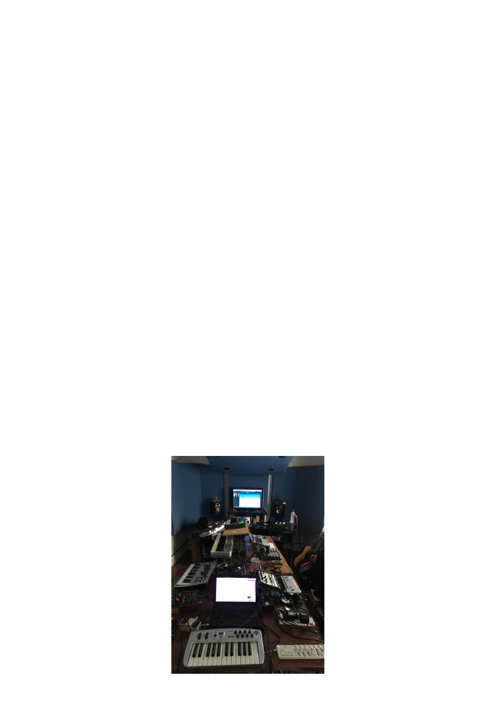
El único inconveniente que surgió en estos momentos era que a veces
olvidábamos cuales eran nuestros respectivos colores y demorábamos en
la identificación de la fuente sonora. Además de que para el espectador
descifrar esto era una tarea completamente imposible. Es por eso que se
pensó en diseñar y asignar una remera del mismo color que la fuente
sonora para cada performer, pudiendo así reconocer a ambos intuitiva e
instantáneamente, tanto para nosotros mismos como para el espectador.
Experiencia con la interfaz
En una primera instancia experimental, la representación era visualizada
en mi computadora personal, lo que traía ciertos problemas técnicos,
debido al conexionado de las placas de sonido, y por otro lado, nadie tenía
acceso a la misma visualmente.
Luego, decidimos instalar todo este sistema en la computadora de Pablo
Bucci, quién es el encargado de técnica, mezcla y grabación. De esta
manera podíamos enviar la representación gráfica a través de un televisor
de 42’’ que se encontraba en un extremo del ensamble, permitiendo así
que todos tengan la posibilidad de verlo desde una buena perspectiva.
Fig 41
Notación en pantalla con TV monitor 42’’
Ventana temporal
Como resultado, nos damos cuenta que el tamaño de ventana de la
representación no es un tema menor. La ventana temporal se extiende
desde un punto del pasado reciente hasta el presente.
Esto habilita la posibilidad de anticipar eventos a partir de poder contar
compases hacia atrás, manteniendo una memoria visual temprana de lo
acontecido, obteniendo mayor control sobre la anticipación.
La duración exacta de la ventana de tiempo visible en cualquier dirección
es un aspecto del sistema que se está investigando. Por lo general se
extiende en un lapso de 27 segundos a 40 segundos en el pasado,
dependiendo de la resolución de pantalla de salida (medida en píxeles) y el
parámetro scroll speed que determina la velocidad de desplazamiento. La
representación se desplaza del presente al pasado (de derecha a izquierda),
partiendo de un “ahora” indicado por el comienzo de la ventana.
La ventana temporal difumina la distinción entre composición e
improvisación porque:
• La información se ingresa antes de ser interpretada y / o
representada en sonido (como en la composición); la planificación y
la coordinación temporal entre los ejecutores se realiza con un apoyo
de notación explícito (como en la composición);
• El orden temporal y la velocidad en la que se ingresa la notación no
tienen por qué corresponderse con el orden temporal y la velocidad
en la que se toca más tarde, es decir, la notación se genera "fuera del
tiempo" (como en la composición);
• Las decisiones musicales se toman durante la actuación (como en la
improvisación);
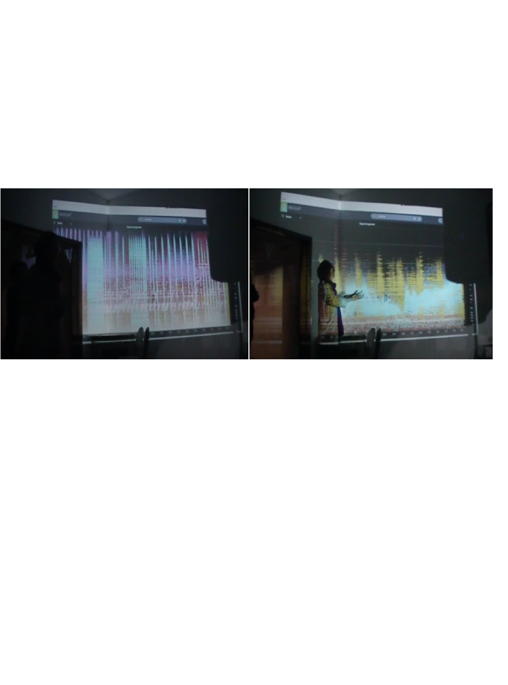
5.2 Experiencias de campo [Eventos y Conciertos]
Se plantearon 3 eventos para poner a prueba el sistema. Se pensaron
estratégicamente 3 espacios y contextos que involucren actividades que
tengan algún tipo de vínculo entre el arte, la tecnología, la improvisación, la
performance, la música electrónica y el arte sonoro.
Centro Cultural “Esquina La Dignidad”
Fig 42
Espectrograma proyectado
El primer evento fue en el Centro Cultural “Esquina la Dignidad”, Caseros,
Buenos Aires. El espacio es un centro cultural que apoya la actividad
artística local dónde se encuentra la Universidad de Tres de Febrero.
Encontramos interesante realizar el evento en este lugar ya que era una
posibilidad para probar el sistema a nivel local, de fácil acceso para los
alumnos, profesores y allegados de la universidad.
A partir de la propuesta realizada para el Centro Cultural, nos ofrecieron
dar inicio a la inauguración de un ciclo de improvisación electrónica,
brindando un lugar extra universitario a los alumnos de la carrera para
poder llevar a cabo sus proyectos personales.
Utilizamos el espectrograma multicanal proyectado sobre una de las
paredes del espacio. La proyección del espectrograma dividía dos espacios:
el espacio del espectador y el espacio dónde nos encontrábamos con el
ensamble. La proyección se encontraba muy alejada del Ensamble y
resultaba difícil poder verla rápidamente de un vistazo. El público poseía un
mejor campo visual.
Durante una pausa del concierto, se explicó al público lo que estaban
observando.
Como resultado, deducimos que el espectrograma tiene que estar más
cerca del Ensamble (como en el laboratorio), pero que a su vez el
espectador también tenga acceso a verlo de la misma forma.
La posición de la proyección dislocaba y separaba demasiado la
representación gráfica de los performers, haciendo imposible poder
apreciar ambas al mismo tiempo. Si bien el espectador tenía un mejor
campo visual, el hecho de no poder apreciar ambas cosas al mismo tiempo
ocasionaba cierta confusión en el espectador para comprender que ambas
cosas formaban parte del mismo proceso de construcción sonora.
Si bien nosotros podíamos distinguir las fuentes sonoras a través de los
colores que nos habíamos auto-asignado, el espectador no conseguía
discernir quién era quién.
Centro Cultural Richards
El Centro Cultural Richards está ubicado en Palermo, Buenos Aires. Es un
espacio para el desarrollo de producciones artísticas de todos los ámbitos,
partiendo de la música en todas sus expresiones dónde se producen
shows, talleres y charlas. En el lugar podemos encontrar una exhibición fija
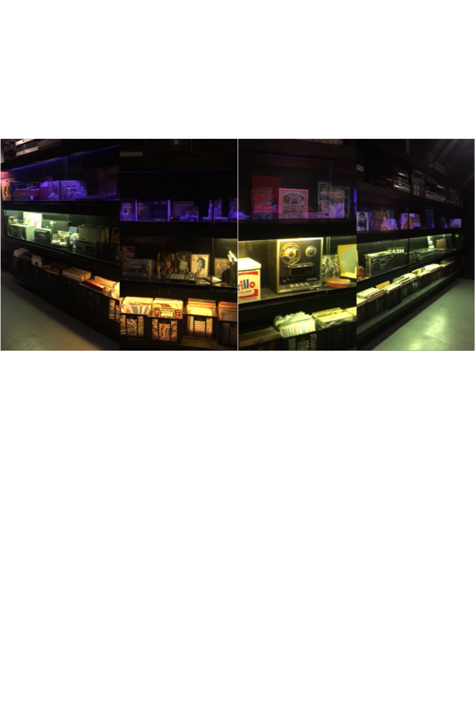
de instrumentos tecnológicos sonoros históricos y una amplia variedad de
colección de vinilo. Este Centro Cultural se encuentra asociado al local
“Exile Records” el cual comercializa principalmente vinilos y cds de todas
las épocas, conteniendo rarezas experimentales de música electrónica,
concreta, electro-acústica, así como también rock y pop de todas las
épocas.
Fig 43
Exhibición fija CC Richards
Encontramos adecuado el contexto, ya que el público que suele frecuentar
el espacio, en su mayoría son neófitos en lo que concierne al audio y al
sonido. Además, la propuesta formaba parte de la segunda edición del
ciclo llamado “Synth Jam” que promueve workshops de hardware y
sintetizadores de audio, y la improvisación con instrumentos electrónicos
analógicos y digitales de todas las épocas.
Durante este segundo evento, cambiamos la disposición en el espacio,
favoreciendo una lectura del espectrograma próxima al Ensamble, y
disponible al espectador desde abajo del escenario y por encima. Subiendo
las escaleras hay un balcón donde se puede ver el escenario desde arriba y
la proyección. De esta manera, se podía ver desde arriba, la ejecución de los
instrumentos y al mismo tiempo ver la representación, por ende, era muy
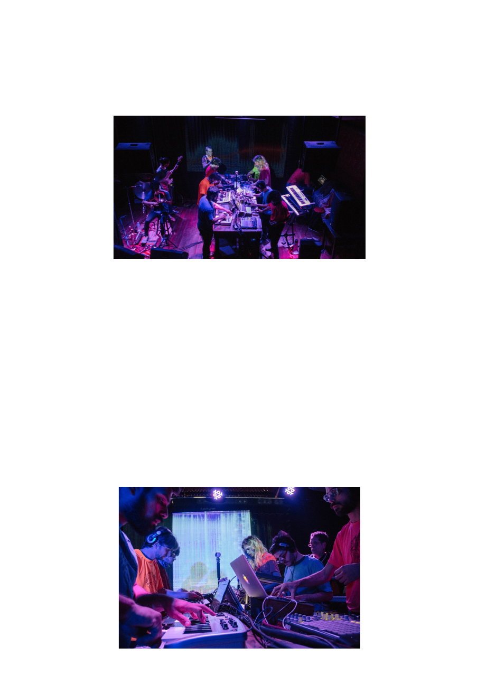
intuitivo y sencillo, relacionar lo que estaba haciendo el performer con sus
manos sobre los instrumentos y lo que se veía proyectado en la
representación gráfica (algo que es muy difícil de ver desde abajo de un
escenario dónde los instrumentos quedan lejos del alcance visual del
espectador).
Fig 44
Vista desde arriba
Aquí el problema para nosotros fue, que el tipo de ventana que elegimos
para visualizar la representación era muy angosto, lo cual no permitía ver
demasiados segundos en el eje X del gráfico. Por lo tanto, se volvía
imposible poder ver lo que hacíamos pasados los dos compases. Esto no
permitía tener acceso a una memoria largo plazo, y por ende dificultaba la
capacidad de anticipación y convertía la improvisación en algo mucho más
efímero, y extremadamente dinámico y veloz.
Fig 45
Tamaño de ventana
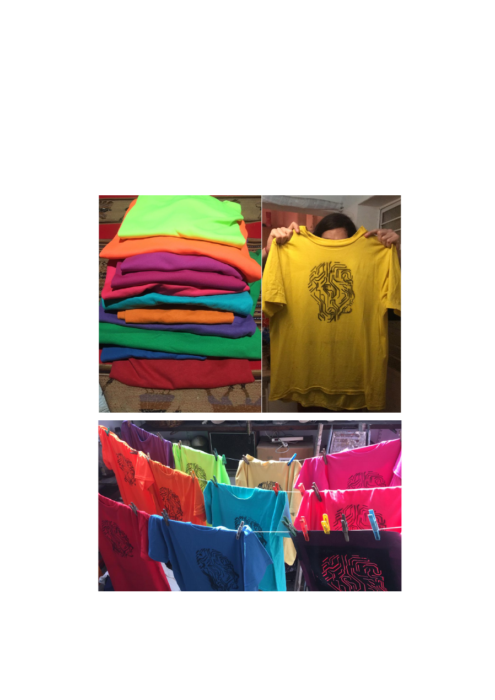
Para este concierto añadimos la vestimenta como parte del sistema. Se
diseñaron 8 remeras lisas de colores, con el logo del Ensamble Electrónico
Hybrido que permitían identificar los colores de las remeras con los colores
del espectrograma multicanal. Esto permitía que el espectador
instantáneamente pudiera localizar al performer con un color del gráfico.
También nos permitía a nosotros mismos asociar rápidamente el color del
otro y mantener un contacto visual y gestual más fluido.
Fig 46
Remeras diseñadas para el Ensamble Electrónico Hybrido
El concierto fue grabado con una cámara 360º que se ubicaba en la mesa
donde ejecutábamos los instrumentos. De manera de poder estudiar
luego, la disposición en el espacio, las gestualidades, el espectador, y qué
aspectos deberíamos tener en cuenta para una próxima vez.
El evento invitó a participar a tres proyectos de diseñadores y
desarrolladores de aplicaciones, software, y hardware de electrónica
aplicada al audio, provenientes de la Universidad Nacional de Tres de
Febrero: Sintetizadores Modulares NÚCLEO, AudioStellar, y BUCCI Clásicos.
Intentando así llevar el laboratorio y el taller a una instancia de concierto.
DOERS CoWorking
DOERS CoWorking es un espacio de oficinas ubicado en Ramos Mejía,
dónde se trabaja de manera cooperativa entre un montón de proyectos de
distintas disciplinas. Nos encontramos interesados mutuamente en este
evento ya que ambos trabajamos con tecnología, programación, y el
concepto de co-working
23
parecería ser un denominador común entre el
trabajo de DOERS y nuestro trabajo como Ensamble. Ellos se mostraron
muy interesados en nuestra metodología de trabajo y nos abrieron las
puertas a experimentar dentro de las oficinas (algo que no es habitual en
DOERS). Tanto así, que dispusieron el espacio de manera que nosotros nos
organicemos del modo que quisiéramos.
23
Según Wikipedia Coworking es: Trabajo cooperativo, trabajo compartido, trabajo en cooperación o
trabajo en oficina integrada. Es una forma de trabajo que permite a profesionales independientes,
emprendedores, y pymes de diferentes sectores, compartir un mismo espacio de trabajo, tanto físico
como virtual, para desarrollar sus proyectos profesionales de manera independiente, a la vez que
fomentan proyectos conjuntos. El neologismo «cotrabajo» es la traducción al español del término
coworking.
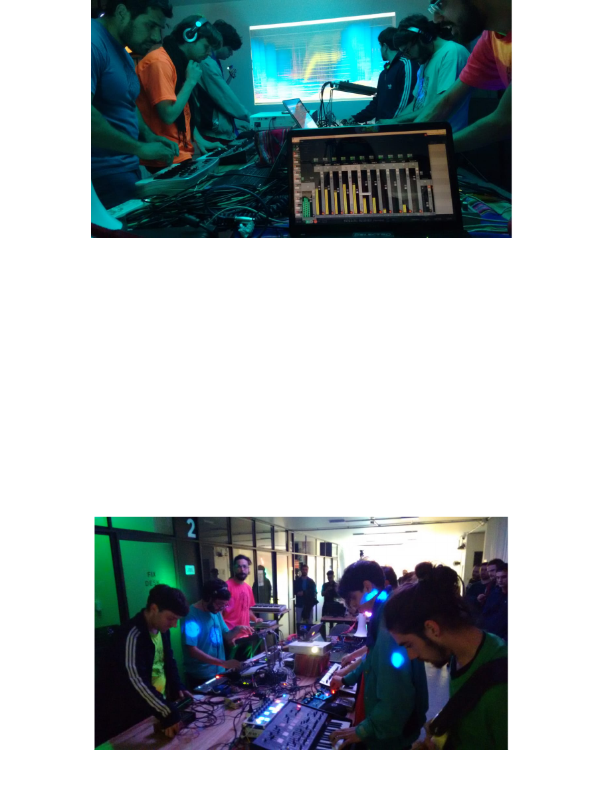
Fig 47
Performers y Espectrograma multicolor
Gracias a ello, optamos por disponernos en el medio del espacio (sin
escenario) con una gran mesa posibilitando al espectador poder recorrer
nuestra zona de una punta a la otra y tener una mayor cercanía con los
performers. La proyección se encontraba en uno de los extremos
permitiendo que todos (tanto el ensamble como los espectadores) puedan
verlo desde cualquier lugar con el mismo grado de alcance.
Fig 48
Cercanía con el espectador
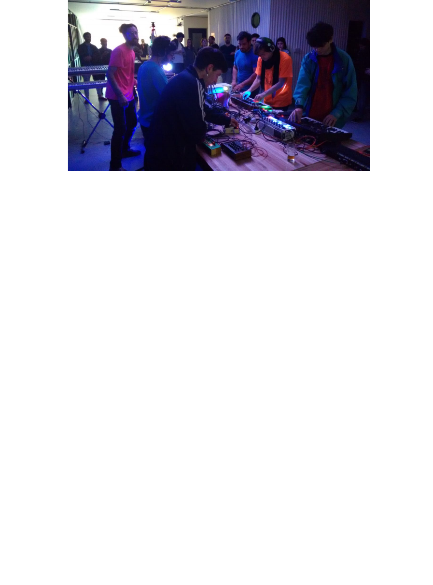
Fig 49
Cercanía con el espectador
La disposición que pudimos lograr en este espacio no es un detalle menor,
ya que es nuestro ideal para cada concierto. De esta manera, el espectador
puede interactuar con los performers, con los instrumentos y con el
espectrograma durante todo el evento. El ambiente generado no es tanto
una instancia de “show” o “concierto”, sino más bien una instancia de
taller/laboratorio a puertas abiertas donde el espectador no va “a escuchar
y a ver” solamente, sino que también aprende, interactúa y nos aporta
muchísimo con su devolución.
En esta oportunidad, se transmitió el evento vía YouTube pudiendo
trasladar la experiencia hacia un espacio virtual (es decir, un canal de una
red social). Los espectadores virtuales podían hablar e interactuar con
nosotros a través de un chat público. Esto es muy interesante para
empezar a pensar otro tipo de evento o de experiencia más allá de la
realidad de los que estamos allí presentes, y poder llegar a otros públicos,
de otros países, de otras instituciones, que estén interesados en el
proyecto.
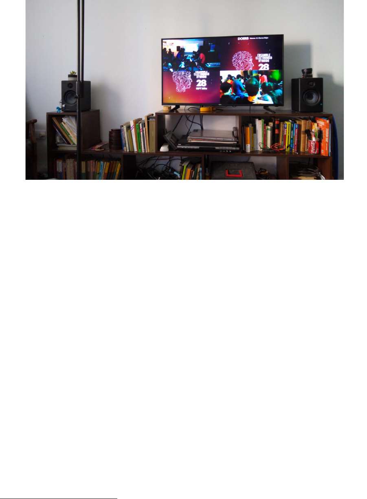
Fig 50
Streaming vía YouTube.
Vista de un espectador virtual
En esta última instancia invitamos a KLINK
24
como proyecto invitado,
quienes dieron una charla sobre síntesis para niños y grandes, permitiendo
a todo el público interactuar con sus módulos de juguete, acercando así
conocimientos básicos de electrónica y audio analógico.
Podemos decir que en esta experiencia se cumplieron muchas de las
condiciones ideales para que nuestro sistema funcione a la perfección.
Sumado a la posibilidad de expandir las posibilidades de un simple evento
clásico de concierto, a ser una experiencia única dónde se pueden llevar a
cabo talleres, charlas, debates, y conciertos, abriendo el laboratorio al
público y llevando más allá los límites de la experiencia en sí misma.
24
Klink es una mini-pyme la cual crea soluciones tecnológicas educativas para niños y adultos.
Diseñan kits tecnológicos para armar inventos y experimentar creativamente, talleres guiados y
experiencias para niños, adolescentes y adultos como complemento a las metodologías
tradicionales de formación.
6. CONCLUSIONES
En resumen, hemos optado por un modo de navegación para notación en
pantalla, combinando tres herramientas de distintas áreas y disciplinas
para desarrollar un sistema y una metodología de trabajo que permita
mejorar la técnica de ensamblaje con medios electrónicos. Todo esto si
bien es desarrollado dentro del contexto del Ensamble Electrónico Hybrido
en particular, ha sido pensado y diseñado para cualquier otro proyecto que
involucre Live Performance de manera de brindar herramientas y
soluciones prácticas tanto a compositores, interpretes y performers.
Screen Score
De todos los modos de notación en pantalla considerados en esta
investigación hemos optado por utilizar el modo de desplazamiento
(scrolling) en dos dimensiones, ya que es el modo que resulto más
adecuado a nuestro contexto por su simpleza, practicidad y funcionalidad.
En términos generales, los modos de desplazamiento y segmentación son
mejores para partituras pre-compuestas, lineares y continuas.
En resumen, hemos optado por un modo de notación en pantalla, y
fusionado tres herramientas para el desarrollo de nuestro sistema
Mientras que las permutativas, transformativas y generativas: se enfocan
en lo no-lineal desde su concepción.
Software
Eanalysis la consideramos una poderosa herramienta creativa para poder
y estructurar ejercicios y consignas prescriptivas que estimulen la
improvisación. Contiene la ventaja de poder utilizar la librería del análisis
morfológico del objeto sonoro de Pierre Schaeffer para indexar símbolos y
signos. Sumado a la posibilidad de indexar caracteres tipográficos, y crear
capas para la segmentación del flujo sonoro.
Sonic Visualizer es una poderosa herramienta de análisis, que seguiremos
utilizando para el análisis de las futuras composiciones. A partir de este
trabajo, se diseñó una plantilla específica para el Ensamble, que se adapta
solamente a la extracción de información que nos resulta adecuada para
nuestro contexto y que es útil para otros proyectos. Principalmente lo
utilizamos para la extracción de información musical: melodías, acordes y
escalas.
Por último, el espectrograma multicanal en tiempo real que ofrece el
IZOTOPE Insight, nos permite generar el espectrograma en tiempo real, y
la individualización de las fuentes sonoras. Hemos transformado la función
de la herramienta. Es decir, utilizamos una herramienta que habitualmente
se utiliza para etapas de mastering en sonido (su interfaz está pensada
para el técnico que opera la mezcla), y cambiamos su funcionalidad
convirtiéndolo en una herramienta de representación gráfica, con una
interfaz abierta y accesible para los performers y la audiencia.
Es por eso que gran parte de esta investigación revisa la utilización y la
importancia del espectrograma, reivindicándolo como la herramienta de
representación gráfica por excelencia.
Consideraciones finales
El sistema de notación estimula los sentidos de los performers y de la
audiencia, de manera de hacerlos partícipe en la toma de decisiones
dentro de un mismo espacio y tiempo.
Hemos estado explorando las posibilidades creativas del sistema de
notación, que reúne elementos de composición (notación y toma de
decisiones musicales previas a la ejecución) con elementos de
improvisación (colaboración en la toma de decisiones musicales en el
momento de la ejecución).
Quizás la notación, después de haber sido conceptualizada como la
abstracción sin sonido de la composición durante tantos años, se pueda
canjear para que ocupe un lugar junto al sonido como un componente
comunicativo vital en tiempo real de la experiencia musical.
La relación entre los artistas, intérpretes o ejecutantes a través de la
notación, afecta al grupo en tiempo real y a las dinámicas de desempeño,
como el compromiso mutuo, la conciencia, la cooperación y la creación de
consenso.
Todo esto permite una redistribución radical de las relaciones entre
performers, partitura y la audiencia.
El espectrograma multicanal en tiempo real permite una gran distinción
entre voces y capas, a través de la expansión de la calidad del timbre y su
dinámica espacial y temporal.
Optimizando la percepción del performer dentro de una improvisación con
medios electrónicos. La manipulación del material musical y la provisión de
coordinación para las performances potencia la atención y el foco del
performer sobre lo que está haciendo, y en función de lo que están
haciendo los demás.
Este tipo de coordinación para performance en vivo a través de un screen
score permite el control y la sincronización de la notación en un amplio
marco temporal.
Para una futura investigación me interesaría ahondar mucho más sobre las
representaciones gráficas y los sistemas de notación en tiempo real, ya que
abren las puertas hacia un nuevo paradigma sobre lo interactivo y
generativo.
7. REFERENCIAS
[1] J. Grayson, Sound Sculpture. Publicado por A.R.C., Aesthetic Research
Centre of Canada (1975), Vancouver, British Columbia, Canada.
[2] “Methods and tools for transcribing electroacoustic music”
[3] Graphical representation: an analytical and publication tool for
electroacoustic music”
[4] Pierre Schaeffer en su “Tratado de los objetos musicales”
[5] David Smalley, Spectromorphology: explaining sound-shape
[6] Lindsay Vickery, “The Evolution of Notational Innovations from the
Mobile Score to the Screen Score”
[7] Gracia Lorenzo, “Representaciones gráficas del sonido: Una herramienta
para el análisis de la interpretación pianística”, Universidad de Zaragoza
(2010).